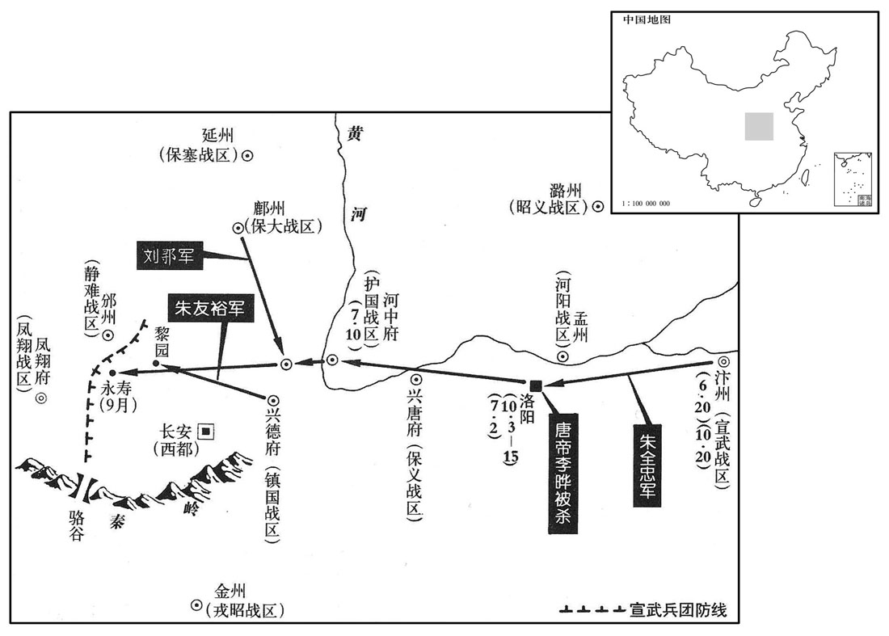
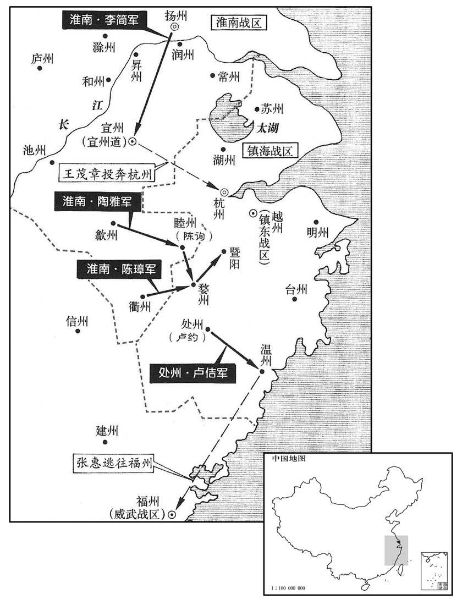
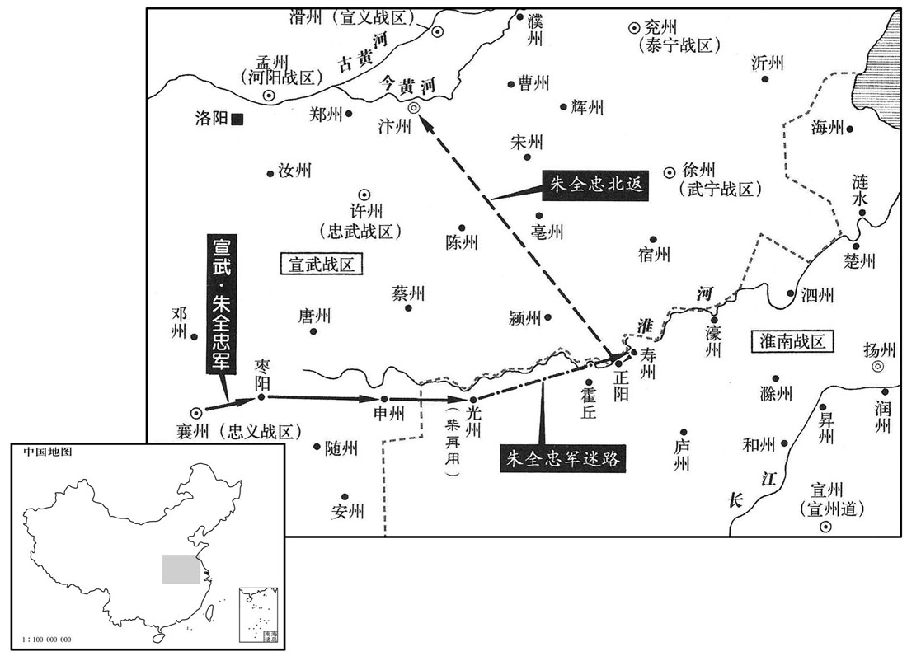
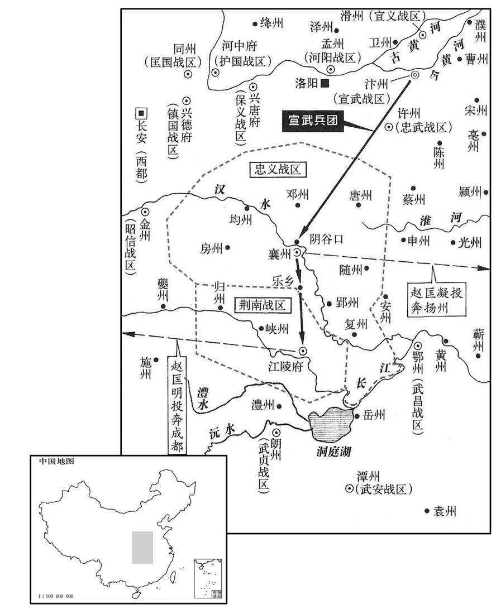
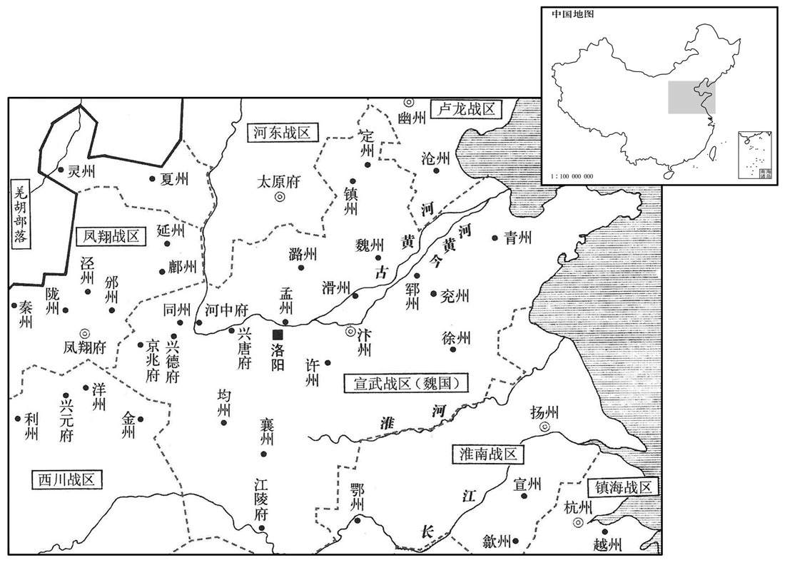
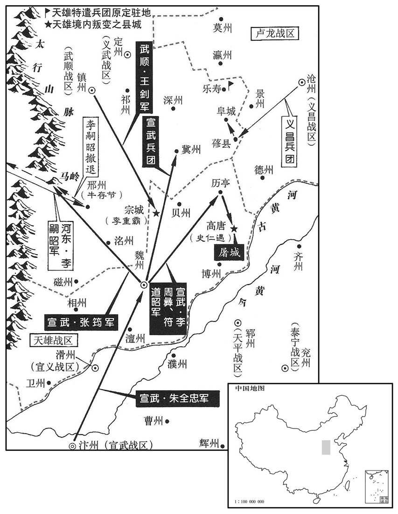
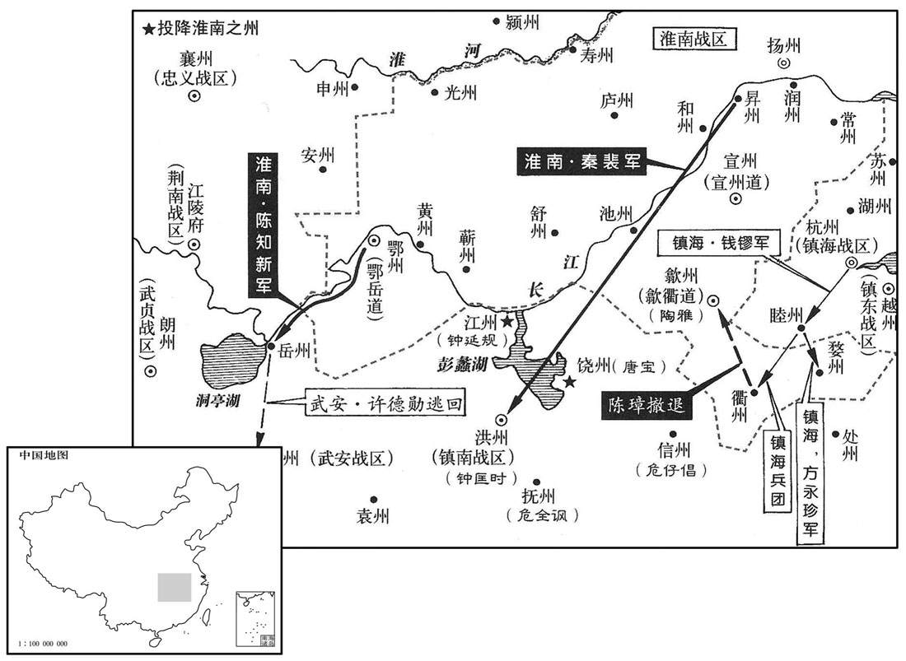
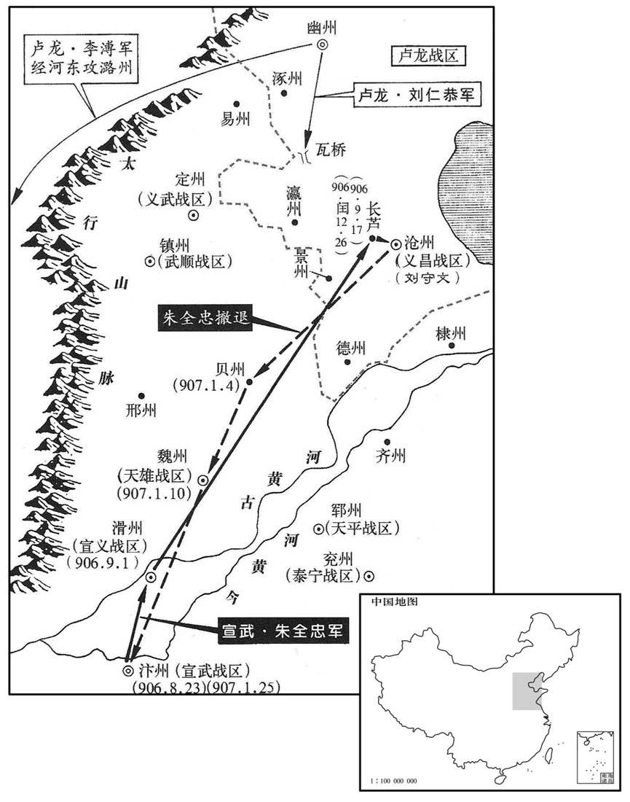
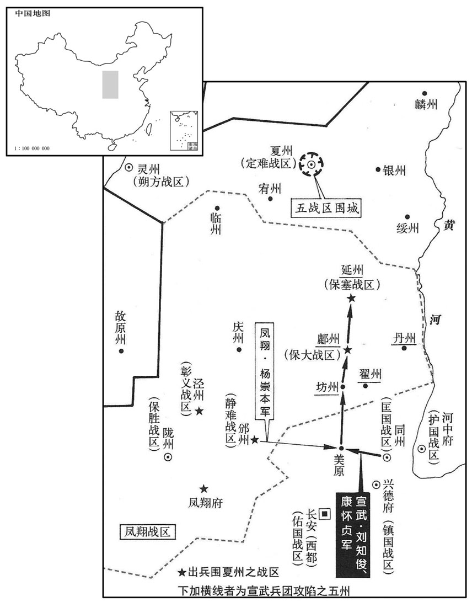

卷次与人物目录 / 卷265
资治通鉴 · 卷第二百六十五【唐纪八十一】
公元904年至公元906年 · 原文、白话与胡三省注
本页按胡注本编排保存全卷内容。白话采用本站所据译本，未可靠对应的内容另列说明；事件标题用于定位，并非原书文字。
本卷共139段原文，131段有译文对应，8段缺译或待核对。
卷第二百六十五【唐纪八十一】起阏逄困敦（甲子）五月，尽柔兆摄提格（丙寅），凡二年有奇。
卷首原文与注释
昭宗圣穆景文孝皇帝下之下
公元904年 · 唐昭宗圣穆景文孝皇帝天佑元年
天佑元年〔（甲子、九〇四）〕
上传原文的注释括号有异常，字符原样保留；无法可靠划分的段落默认全文显示。
本年记事分属相邻卷，按原书顺序分别保留：第264卷 · 第265卷。
本年事件索引（现代整理）
- 朝廷加封张汉瑜为同平章事
- 昭宗设宴招待朱全忠及百官，朱全忠疑惧拒绝入内殿
- 赵匡凝遣水军攻夔州，被王宗阮击退并以铁栅断峡
- 李茂贞、王建、李继徽联合檄文讨伐朱全忠
- 冯涓劝王建与李茂贞和亲以保西川屏障
- 王建采纳冯涓进言，减轻赋敛
- 朱全忠因惧昭宗之子德王裕而谋除之，昭宗饮酒忧惧
- 多镇藩帅打出兴复名号，朱全忠密谋另立幼主
- 朱全忠派人夜入宫中弑杀昭宗及李渐荣
- 蒋玄晖矫诏称李渐荣、裴贞一弑逆，拥立辉王李柷
- 李克用重新任用张承业为监军
- 李神福攻鄂州未克病返，杨行密任刘存接替
- 昭宣帝尊何皇后为皇太后
- 朱全忠率军进逼凤翔、邠宁，未遇抵抗而东还
- 发生日食
- 朱全忠假装悲痛昭宗被弑，随后赐死朱友恭、氏叔琮灭口
- 朱全忠兼领四镇节度使，张全义兼领忠武节度使
- 镇国节度使朱友裕去世
- 光州归降朱全忠，朱全忠率军救援并掠夺淮南
- 钱镠派叶让刺杀陈璋失败，陈璋反叛归降杨行密
- 马殷之弟马賨归长沙，行密亲自送行
- 马殷任弟马賨为节度副使，马賨建议与杨行密结好遭拒
- 刘隐重金结交朱全忠，朝廷任其为清海节度使
- 昭宣光烈孝皇帝李柷谥号记载
- 补记后唐明宗时期追号昭宣帝
五月，丙寅，加河阳节度使张汉瑜同平章事。
五月丙寅（初二），朝廷加授河阳节度使张汉瑜为同平章事。
帝宴朱全忠及百官于崇勋殿，〔时以洛阳宫前殿为贞观殿，内朝为崇勋殿。〕既罢，复召全忠宴于内殿；〔复，扶又翻。〕全忠疑，不入。帝曰：「全忠不欲来，可令敬翔来。」全忠擿翔使去，曰：「翔亦醉矣。」〔全忠疑帝欲图己，敬翔其腹心也，故亦不使之。擿，他狄翻。〕辛未，全忠东还；〔还，从宣翻，又如字。〕乙亥，至大梁。
昭宗在崇政殿宴请朱全忠及文武百官。宴席散后，昭宗又召朱全忠进内殿饮宴；朱全忠怀疑昭宗要谋害自己，不进去。昭宗说：“朱全忠不想来，可以让敬翔进来。”朱全忠指使敬翔离去，说：“敬翔也醉了。”辛未（初七），朱全忠东归；乙亥（十一日），朱全忠回到大梁。
忠义节度使赵匡凝遣水军上峡攻王建夔州，〔赵匡凝以襄阳之甲窥夔在三峡上游，泝流攻之，故曰上峡。上，时掌翻。〕知渝州王宗阮等击败之。万州刺史张武作铁焴绝江中流，立栅于两端，谓之「谫峡」。〔败，补迈翻。焴，古恒翻。谫，即锁字。〕
忠义节度使赵匡凝派遣水军溯流上三峡，攻打王建所辖之夔州，主持渝州事务的王宗阮等将他们打败。万州刺史张武作粗铁绳断绝长江水流中央的航道，在两端设立栅栏，称为“锁峡”。
六月，李茂贞、王建、李继徽传檄合兵以讨朱全忠；全忠以镇国节度使朱友裕为行营都统，将步骑击〔【章：十二行本「击」上有「数万」二字；乙十一行本同；孔本同。】〕之；〔当是时，蜀兵不出，朱全忠之兵力不能及也，令朱友裕击岐、邠耳。〕命保大节度使刘鄩弃鄜州，引兵屯同州，引兵屯同州。〔刘鄩在鄜州，逼近李茂贞、继徽，声援不接，故使弃鄜还屯同州，与朱友裕合势。鄜，音夫。〕癸丑，全忠引兵自大梁西讨茂贞等；秋，七月，甲子，过东都入见；见，贤遍翻。〕壬申，至河中。
六月，李茂贞、王建、李继徽传布檄文合兵讨伐朱全忠。朱全忠任命镇国节度使朱友裕为行营都统，率领步兵、骑兵数万人攻击岐州、州；命令保大节度使刘放弃州，带兵前往同州驻扎。癸丑（二十日），朱全忠统帅大军自大梁出发，向西讨伐李茂贞等。秋季，七月甲子（初二），朱全忠路过东都洛阳，入城朝见昭宗；壬申（初十），到达河中。
西川诸将劝王建乘李茂贞之衰，攻取凤翔。建以问节度判官冯涓，〔涓，圭渊翻。〕涓曰：「兵者凶器，残民耗财，不可穷也。〔言不可穷兵。极其兵力，好战不休，是穷兵也。〕今梁、晋虎争，劫不两立，〔梁，朱全忠。晋，李克用。〕若并而为一，举兵向蜀，虽诸葛亮复生，不能敌矣。〔复，扶又翻。〕凤翔，蜀庂藩蔽，不若与之和亲，结为婚姻，无事则务农训，兵，保固疆埸，〔埸，音亦。〕有事则觇其机事，观衅而动，可以万全。」觇，丑廉翻，又丑艳翻。衅，许觐翻。〕建曰：「善！茂贞虽庸才，然有强悍之名，〔悍，下罕翻，又侯旱翻。〕远近畏之，与全忠力争则不足，自守则有余，使为吾藩蔽，所利多矣。」乃与茂贞修好。〔王建既并山南诸州，阻关而守，关外倚李茂贞为藩蔽，故与之修好。好，呼到翻。〕丙子，茂贞遣判官赵锽如西川，为其侄天雄节度使继勋求婚；〔锽，户盲翻。为，于伪翻。此天雄军治秦州，属李茂贞。〕建以女妻之。〔妻，七细翻。〕茂贞数求货及甲兵于建，建皆与之。〔角军实以厚寇雠，岂王建之本心哉！倚以自蔽，不其数也。数，所角翻。〕
西川诸将劝节度使王建乘李茂贞衰弱的机会，攻取凤翔。王建为此询问节度判官冯涓，冯涓说：“战争是凶器，残害百姓，耗损钱财，因此，不应穷兵黩武。现在大梁朱全忠、晋阳李克用两虎相争，势不两立，如果朱全忠、李克用的两支军队合而为一，发兵攻蜀，虽然诸葛亮再生，也是不能抵挡的。凤翔是蜀的屏障，不如与李茂贞和睦亲善，结为婚姻，无事就致力农业生产，操练军队，保卫巩固边界，有事就察看时机，看准破绽而行动，可以万无一失。”王建说：“好！李茂贞虽然是个庸才，然而有勇猛无所顾忌的名声，远近都怕他，与朱全忠拼力抗争虽不足，但保卫自己却有余，使他作为我的屏障，得利很多啊！”于是，与李茂贞建立亲善关系。丙子（十四日），李茂贞派遣判官赵前往西川，替他的侄子天雄节度使李继勋求婚；王建把女儿嫁给李继勋为妻。李茂贞屡次向王建求索财物及铠甲兵器，王建都给了他。
王建赋敛重，人莫敢言。冯涓因建生日献颂，先美功德，后言生民之苦。建愧谢曰：「如君忠谏，功业何忧！」赐之金帛。自是赋敛稍损。〔史言冯涓因献颂而进规，故其谏易入。敛，力赡翻。〕
王建征收赋税很重，没有人敢说。冯涓借王建的生日进献颂词，先赞美他的功德，后陈述百姓的困苦。王建看了非常惭愧，致谢说：“像您这样忠言直谏，成就功业又有什么可忧虑的呢！”于是，赏赐给冯涓金帛。从此赋税稍有减少。
初，朱全忠自凤翔迎车驾还，〔见二百六十三卷天复三年。还，从宣翻，又如字。〕见德王裕眉目疏秀，且年齿已壮，恶之，〔恶，乌路翻。全忠欲鞾，利立庸幼；德王裕貌秀而齿长，立之非己之利也，故恶之。〕私谓崔胤卖臣耳。」〔史言朱全忠之狡猾。〕帝自离长安，日忧不测，与皇后终日沈饮，或相对涕泣。〔离，力智翻。是年正月壬戌，帝离长安而东。沈，持林翻。〕全忠使枢密使蒋玄晖伺察帝，动静皆知之。〔伺，相吏翻。〕帝从容谓玄晖曰：「德王朕之爱子，全忠何故坚欲杀之﹖」因泣下，啮中指血流。玄晖具以语全忠，〔史言昭宗之轻脱以速祸。从，千容翻。啮，五结翻。语，牛倨翻。〕全忠愈不自安。
两版字句有差异，建议核对原文。
当初，朱全忠自凤翔迎接昭宗车驾返回长安，见德王李裕眉目清秀，并且已经成年，很厌恶他，私下对崔胤说：“德王曾经窃据帝位，哪里能够再留下！您为什么不向陛下说！”崔胤把朱全忠的话向昭宗说了。昭宗问朱全忠，朱全忠说：“陛下父子之间的事情，我怎么敢私下议论，这是崔胤出卖我罢了。”昭宗自从离开长安，每天忧虑发生意外事变，整天与何皇后沉湎酒中，或者相对哭泣。朱全忠让枢密使蒋玄晖侦察昭宗的言行，昭宗的动静他都知道。昭宗从容对蒋玄晖说：“德王是朕的爱子，朱全忠为什么一定要杀他？”因此落泪，咬中指流血不止。蒋玄晖将此情形详细告诉朱全忠，朱全忠更加不安。

时李茂贞、杨崇本、李克用、刘仁恭、王建、杨行密、赵匡凝移往来，皆以兴复为辞。全忠方引兵西讨，〔西讨岐、邠。〕以帝有英气，恐变生于中，欲立幼君，易谋禅代。〔易，以豉翻。〕乃遣判官李振至洛阳，与玄晖及左龙武统军朱友恭、右龙武统军氏叔琮等图之。
当时，李茂贞、杨崇本、李克用、刘仁恭、王建、杨行密、赵匡凝往来传移檄文，都以兴复皇室为辞。朱全忠正在率领军队向西讨伐岐州、州，因昭宗有英武之气，恐怕宫中产生变故，想要另立幼君，以谋求禅让取代。于是，朱全忠派遣判官李振到洛阳，与蒋玄晖及左龙武统军朱友恭、右龙武统军氏叔琮等谋划。
八月，壬寅，帝在椒殿，〔椒殿，皇后殿也。史照曰：椒殿亦犹椒房之称。〕玄晖选龙武牙官史太等百人夜叩宫门，言军前有急奏，〔军前，谓西讨行营军前也。〕欲面见帝。夫人裴贞一开门见兵，曰：「急奏何以兵为﹖」史太杀之。玄晖问：「至尊安在﹖」昭仪李渐荣临轩呼曰：〔呼，火故翻。〕「宁杀我曹，勿伤大家！」帝方醉，遽起，单衣绕柱走，史太追而弒之。〔年三十八。〕渐荣以身蔽帝，太亦杀之。又欲杀何后，后求哀于玄晖，乃释之。〔何后祈生于蒋玄晖而卒以玄晖死，屈节以荀岁月之生，岂若以身殉昭宗之不失节也！〕
八月壬寅（十一日），昭宗在何皇后殿内，枢密使蒋玄晖选择龙武牙官史太等一百人，在夜里敲击宫门，说军事前线有急事奏报，要面见昭宗。夫人裴贞一开门见兵士，说：“有急事奏报用兵士做什么？”史太杀了她。蒋玄晖问：“陛下在哪里？”昭仪李渐荣对窗大叫道：“宁可杀了我们，不要伤害陛下！”昭宗刚醉，急忙起来，穿着单衣绕柱逃跑，史太追上并把他杀死。李渐荣用身体遮挡昭宗，史太也杀了她。史太又要杀何皇后，何皇后向蒋玄晖哀求，才放了她。
癸卯，蒋玄晖矫诏称李渐荣、裴贞一弒逆，宜立辉王祚为皇太子，更名柷，〔更，工衡翻柷，昌六翻。〕监军国事。〔监，古衔翻。〕又矫皇后令，太子于柩前即位。宫中恐惧，不敢出声哭。丙午，昭宣帝即位，时年十三。
癸卯（十二日），蒋玄晖假造诏令，称李渐荣、裴贞一谋杀昭宗，应该立辉王李祚为皇太子，更名李，代理军国政事。又假传皇后令，太子于灵柩前即位。宫中一片恐惧气氛，不敢哭出声来。丙午（十五日），昭宣帝即位，时年十三岁。
李克用复以张承业为监军。〔李克用匿张承业见上卷天复三年。监，古衔翻。〕
李克用再以张承业为监军。
淮南将李神福攻鄂州未下，〔天复三年，李神福始攻鄂州，天佑元年又攻鄂州，事并见上卷。〕会疾病，还广陵，杨行密以舒州团练使泌阳刘存代为招讨使；〔泌阳，汉湖阳县地，后魏置石马县，后讹为上马，贞观元年废，开元十六年复割湖阳置上马县，天宝元年改曰泌阳，属唐州。宋白曰：泌阳县本汉舞阴县地云云，同上。唐改泌阳，以地在泌水之阳也，唐州治焉。泌，兵媚翻。〕神福寻卒。宣州观察使台蒙卒，〔卒，子恤翻。〕杨行密以其子牙内诸军使渥为宣州观察使，右牙都指挥使徐温谓渥曰：「王寝疾而嫡嗣出藩，此必奸臣之谋。他日相召，非温使者及王令书，慎无亟来！」〔诸侯下令于境内，谓之令书，以异于天子所下制、诏、敕之书也。亟，纪力翻。为徐温召渥张本。〕渥泣谢而行。
淮南将领李神福攻打鄂州，没有攻克，适逢病重，回广陵，杨行密以舒州团练使泌阳刘存代为招讨使；李神福不久就死了。宣州观察使台去世，杨行密以自己的儿子牙内诸军使杨渥为宣州观察使。右牙都指挥使徐温对杨渥说：“吴王卧病，而令嫡子出藩，这一定是奸臣的阴谋。他日召您回来，不是我派遣的使者及吴王的令书，千万不要立即回来！”杨渥哭着道谢，就上路了。
九月，己巳，尊皇后为皇太后。
九月己巳（初八），昭宣帝尊何皇后为皇太后。
朱全忠引兵北屯永寿，南至骆谷，〔军永寿，所以致邠兵；自此而南至骆谷，所以致岐兵。〕凤翔、邠宁兵竟不出。辛未，东还。
朱全忠率领的军队北边驻扎永寿，南边到达骆谷，凤翔、宁的军队竟不出战。辛未（初十），朱全忠率兵东还。
冬，十月，辛卯朔，日有食之。
冬季，十月，辛卯朔（初一），出现日食。
朱全忠闻朱友恭等弒昭宗，阳惊，号哭〔号，户刀翻。〕自投于地，曰：「奴辈负我，令我受恶名于万代！」癸巳，至东都，〔自军前东还至东都。〕伏梓宫恸哭流涕，又见帝自陈非己志，请讨贼。〔帝，昭宣帝也。贼，弒君之贼。〕先是，护驾军士有掠米于市者，〔先，悉荐翻。〕甲午，全忠奏朱友恭氏叔琮不戢士卒，侵援市肆，〔以此二人罪，不敢昌然以弒逆之罪罪之。〕友恭贬崖州司户，复姓名李彦威，〔李彦威，寿州人，客汴州，殖财任侠，朱全忠爱而子之。考异见二百五十九卷景福二年。〕叔琮贬白州司户，寻皆赐自尽。彦威临刑大呼曰：「卖我以塞天下之谤，〔呼，火故翻。塞，悉则翻。〕如鬼神何！行事如此，望有后乎！」
朱全忠听到朱友恭等杀死昭宗的消息，假装震惊，放声大哭，自己扑倒在地上，说：“奴才们害死我了，让我千秋万代蒙受恶名！”癸巳（初三），朱全忠到达东都洛阳，伏在昭宗的灵柩上恸哭流涕；又进见昭宣帝，自陈杀死昭宗不是自己的心意，请求讨伐乱臣贼子。在这之先，护卫皇帝的军士有在市上抢米的，甲午（初四），朱全忠奏参朱友恭、氏叔琮不能约束士卒，侵扰街市店铺，将朱友恭贬为崖州司马，恢复原姓名李彦威，氏叔琮贬为白州司马，不久都赐令自尽。李彦威自杀前大声呼喊说：“出卖我来堵塞天下的指责，但拿鬼神怎么办！如此行事，还指望有后代吗！”
丙申，天平节度使张全义来朝。丁酉，复以全忠为宣武、护国、宣义、天平节度使；以全义为河南尹兼忠武节度使、判六军诸卫事。〔朱兵忠兼忠武，张全义帅天平，见上卷上年。朱友恭、氏叔琮既诛，以全义领宿卫。〕乙巳，全忠辞赴镇，庚戌至大梁。
丙申（初六），平天节度使张全义来朝见。丁酉（初七），又任命朱全忠为宣武、护国、宣义、天平节度使；任命张全义为河南尹兼忠武节度使、判六军诸卫事。乙巳（十五日），朱全忠辞别前往藩镇，庚戌（二十日）到大梁。
镇国节度使朱友裕薨于园。〔死于园行营。〕
镇国节度使朱友裕在梨园行营去世。
光州叛杨行密，降朱全忠，〔降，户江翻。〕行密遣兵围之，与鄂州皆告急于全忠。〔杨行密使其将刘存攻杜洪于鄂州。〕十一月，戊辰，全忠自将兵五万自颍州济淮，〔自颍州颍上县取正阳济淮。〕军于霍丘，〔九域志，霍丘县在寿州东一百二十七里。按元丰之寿州治下蔡。〕分兵救鄂州。淮南兵释光州之围还广陵，按兵不出战，全忠分命诸将大掠淮南以困之。
光州背叛杨行密，投降朱全忠，杨行密派遣军队包围光州。光州与鄂州都向朱全忠告急。十一月戊辰（初八），朱全忠亲自统帅五万军队自颍州渡过淮河，在霍丘驻扎，分派军队救援鄂州。淮南军队解除对光州的包围返回广陵，按兵不出来迎战，朱全忠分派诸将大肆虏掠淮南来让广陵陷于困境。
钱镠潜遣衢州罗城使叶让杀刺史陈璋，事泄；〔钱镠恨陈璋见二百六十二卷天复二年。〕十二月，璋斩让而叛，降于杨行密。〔降，户江翻。〕
钱暗中派遣衢州罗城使叶让杀死衢州刺史陈璋，事情泄露。十二月，陈璋斩杀叶让而背叛钱，投降杨行密。
初，马殷弟〔賨，徂宗翻。沈，持林翻。〕事孙儒，为百胜指挥使；〔以百战百胜名军。〕儒死，事杨行密，屡有功，迁黑云指挥使。行密尝从容问其兄弟，〔从，千容翻。〕乃知为殷之弟，大惊曰：「吾常怪汝器度緕伟，〔緕，古回翻。〕困非常人。当遣汝归。」賨泣辞曰：「賨淮西残兵，〔马賨从秦宗权、孙儒起于淮西，故云然。〕大王不杀而宠任之；湖南地近，尝得兄声问，賨事大王久，不愿归也。」行密固遣之。是岁，賨归长沙，行密亲饯之郊。
当初，武安节度使马殷的弟弟马，生性沉着勇敢，侍奉孙儒，任百胜指挥使。孙儒死后，侍奉杨行密，屡次立有战功，升任黑云指挥使。杨行密曾无意中询问他的兄弟，才知道是马殷的弟弟，大为惊讶，说：“我常常奇怪你的器度奇特，果然不是平常的人。应当让你回去。”马哭着推辞说：“我是淮西的残兵，大王不杀而宠信任用。湖南离此不远，曾经得到哥哥的问讯，我侍奉大王已经很久，不愿意回去了。”杨行密坚决让他回去。这一年，马回长沙，杨行密亲自到郊外为他饯行。
賨至长沙，殷表賨为节度副使。他日，殷议入贡天子，賨曰：「杨王地广兵强，〔杨行密封吴王，故称之。与吾邻接，不若与之结好，〔好呼到翻。〕大可以为缓急之援，小可通商旅之利。」殷作色曰：「杨王不事天子，一旦朝廷致讨，罪将及吾。汝置此论，勿为吾祸！」〔史言马殷畏朱全忠。〕
两版字句有差异，建议核对原文。
马到长沙，马殷上表请任马为节度副使。有一天，马殷与马商议向皇上进贡的事，马说：“杨王地广兵强，与我疆界接连，不如与他结为友好，从大处说可以作为缓急之援，从小处讲可以有通商旅之利。”马殷变色说：“杨王不侍奉天子，一旦朝廷发兵讨伐，罪将涉及我们。你放弃这种主张，不要为我招祸！”
初，清海节度使徐彦若遗表荐副使刘隐权留后，〔事见二百六十二卷天复元年。〕朝建以兵部尚书崔远为清海节度使。远至江陵，闻岭南多盗，且畏隐不受代，不敢前，朝建召远还。隐遣使以重赂结朱全忠，乃奏以隐为清海节度使。〔史言刘隐自托于朱全忠。〕
当初，清海节度使徐彦若临终上表荐举副使刘隐代理留后，朝廷任命兵部尚书崔远为清海节度使。崔远到达江陵，听说岭南盗贼很多，并且畏惧刘隐不接受替代，不敢前进，朝廷召崔远回京师。刘隐派遣使者用重贿交结朱全忠，朱全忠于是奏请以刘隐为清海节度使。
昭宣光烈孝皇帝〔讳祚，即位更名柷，昭宗第九子。后唐明宗天成三年立庙于曹州，
本段缺少可靠对应白话，原文完整保留；未使用生成译文。
四年乃追崇谥号。〕
本段缺少可靠对应白话，原文完整保留；未使用生成译文。
公元905年 · 唐昭宗圣穆景文孝皇帝天佑二年
天佑二年〔（乙丑，九〇五）〕
上传原文的注释括号有异常，字符原样保留；无法可靠划分的段落默认全文显示。
本年事件索引（现代整理）
- 朱全忠派诸将进兵逼近寿州
- 安仁义坚守润州，城破后被俘处斩
- 陶雅击败钱镠援军，俘获钱镠从弟钱镒等人
- 朱全忠任李振知青州事，接替王师范
- 朱全忠围攻寿州未克，撤军返回大梁
- 李振抵达青州，王师范全族迁往大梁
- 朱全忠之兄朱全昱以太师身份退休
- 朱全忠在社日酒宴中缢杀昭宗九位皇子
- 刘存攻克鄂州，擒杀杜洪及曹延祚
- 唐昭宗葬于和陵，庙号昭宗
- 李行密病危时，严可求、徐温遣使召回杨渥
- 朝廷任朱全忠为诸道兵马元帅，另设元帅府
- 朱全忠忽然改变计划，决定乘胜进攻淮南
- 朝廷改昭信军为戎昭军
- 朱全忠发兵攻寿州途中驻扎光州，刺史申再用坚守拒降
- 起居郎苏楷借昭宗谥号不美之名请求改谥，朝廷改庙号为襄宗
- 杨渥抵达广陵，受命为淮南留后
- 朱全忠进攻寿州遇雨迷路，未能围城而撤至正阳
- 朝廷改成德军为武顺军
- 申再用袭击朱全忠后军，朱全忠渡淮北撤回大梁
- 朱全忠密谋受禅称帝，李振、王殷等人进谗离间
- 王建以客礼接待赵匡明
- 韦庄劝王建拒绝昭宗告哀使司马卿入蜀
- 吴王杨行密去世，杨渥继承淮南节度使等职
- 柳璨、蒋玄晖商议加朱全忠九锡，朱全忠拒绝禅位建议
- 朱全忠听信王殷、赵殷衡谗言，杀死蒋玄晖等人
- 王殷、赵殷衡诬告蒋玄晖私通何太后，何太后被杀
- 朝廷以宫禁内乱为由，取消正月谒郊庙礼
- 柳璨、张廷范获罪处死
- 王宗朗弃守金州，冯行袭收复金州并改镇均州
- 陈询弃睦州逃往广陵，陶雅接管睦州
- 杨渥因王茂章不让他带走亲兵而遣李简袭宣州
- 杨彪击退侵犯淮南的湖南军
- 灵武节度使韩逊奏报吐蕃骑兵屯驻宗高谷
- 李简攻入宣州，王茂章逃往两浙
- 朝廷加封曲承裕为同平章事
- 罗绍威借朱全忠之力诛灭魏博牙军八千家
- 朝廷任庞巨昭、叶广略为节度使
- 钱镠前往睦州
- 王宗阮攻取归州，俘获韩从实
- 陈璋撤出婺州退保衢州，钱镠军攻取婺州
- 杨渥派陈知新攻占岳州
- 朝廷任朱全忠为三司都制置使，三司之名始于此
- 发生日食
- 罗绍威诛灭牙军后魏博诸军猜忌不安，史仁遇据高唐作乱
- 杨行密病中命严可求召杨渥继位，任王茂章为宣州观察使
- 朝廷任朱全忠为诸道兵马元帅
- 朱全忠决定乘胜进攻淮南，未听敬翔劝阻
- 朝廷将昭信军改名为戎昭军
- 朱全忠进军光州，申再用坚守城池拒绝投降
- 苏楷借昭宗谥号不当请改谥，朝廷改庙号为襄宗
- 杨渥抵达广陵，杨行密承制任其为淮南留后
- 朱全忠遭遇大雨迷路，未能攻寿州而退驻正阳
- 朝廷将成德军改名为武顺军
- 申再用袭击朱全忠后军，朱全忠渡淮北撤回大梁
- 朱全忠急于谋求禅代，李振、王殷等谗言蒋玄晖、柳璨阻挠
- 王建以宾客之礼接待逃入成都的赵匡明
- 韦庄设计拒绝朝廷告哀使入蜀，称西川将士欲为昭宗报仇
- 吴王杨行密去世，杨渥继任淮南节度使、东南诸道行营都统
- 柳璨等请加朱全忠九锡，朱全忠拒绝受禅
- 朱全忠诛杀蒋玄晖、应顼、朱建武等人
- 朱全忠又诬陷何太后与蒋玄晖私通，命人杀害何太后
- 朝廷以宫禁内乱为由取消来年正月郊庙祭祀
- 柳璨被贬后遭斩杀，张廷范被车裂
- 王宗朗弃金州逃回成都，冯行袭收复金州并移治均州
- 陈询弃守睦州奔往广陵，陶雅入城接管
- 杨渥因王茂章不让其带走宣州军帐，遣李简出兵讨伐
- 杨彪击退来犯淮南的湖南军队
春，正月，朱全忠遣诸将进兵逼寿州。〔是时寿州治寿春，朱全忠自霍丘遣诸将进逼之。〕
春季，正月，朱全忠派遣诸将率兵进逼寿州。
润州团练使安仁义勇决得士心，故淮南将王茂章攻之，踰年不克。〔王茂章攻润州事，始上卷天复三年八月。〕杨行密使谓之曰：汝之功吾不忘也，〔安仁义归杨行密，破赵锽、孙侕，平宣、润，皆有功。〕能束身自归，当以汝为行军副使，但不掌兵耳。」仁义不从。茂章为地道入城，遂克之。仁义举族登楼，众不敢逼。〔安仁义在淮南军中号最善射，众惮之，故不敢逼。〕先是攻城诸将见仁义辄骂之，〔先，悉荐翻。〕惟李德诚不然，至是仁义召德诚登楼，谓曰：「汝有礼，吾今以为汝功。」且以爱妾赠之。〔【章：十二行本「之」下有「乃掷弓于地」五字；乙十一行本同；孔本同；张校同；退斋校同。】〕德诚掖之而下，井其子斩于广陵市。〔田頵、朱延寿、安仁义，淮南诸将中之鎗鎗者也。三叛连衡，不足以病杨行密。其年之余，相次禽殄，行密未易才也。〕
润州团练安仁义勇敢决断，深得军心，所以淮南将领王茂章攻打润州，过了一年没有攻克。杨行密派遣使者对安仁义说：“你的功劳我不会忘记，能够自缚归来，当让你任行军副使，只是不掌兵权罢了。”安仁义没有投降。王茂章挖地道进城，于是占领了润州。安仁义带全族上楼，众人不敢逼近。此前，攻城各将领望见安仁义就骂他，只有李德诚不这样，到这时，安仁义召李德诚登楼，对他说：“你有礼貌，我现在把功劳给你。”并且把自己的爱妾赠送给他。于是，把弓箭扔在地上。李德诚夹着安仁义下楼，连同他的儿子在广陵街市斩首。
两浙兵围陈诣于睦州，〔陈诣叛钱镠事始上卷天复三年。〕杨行密遣西南招讨使陶雅将兵救之；军中夜惊，士卒多踰垒亡去，左右及裨将韩球奔告之，雅安卧不应，须臾自定，亡者皆还。〔史言御众之术，惟静足以制动。〕钱镠遣其从弟镒及指挥使顾全武、王球御之，为雅所败，〔从，才用翻。镒，九质翻。败，补迈翻。〕虏镒及球以归。
两浙军队在睦州把陈询包围，杨行密派遣西南招讨使陶雅率领军队前去救援。陶雅的军营中夜里受惊，许多士卒越过营垒逃走，左右及裨将韩球跑来报告陶雅，陶雅安睡不理。片刻便自行安定，逃走的士卒都回来了。钱派遣他的堂弟钱镒及指挥使顾全武、王球抵御，被陶雅打败，俘虏钱镒及王球返回广陵。
庚午，朱全忠命李振知青州事，代王师范。〔朱全忠宽西顾之虏，然命李振代王师范。〕
庚午（十一日），朱全忠任命李振主持青州事务，替代王师范。
全忠围寿州，州人闭壁不出。全忠乃自霍丘引归，〔朱全忠遣诸将逼寿州城下，而留屯霍丘为后势。〕二月辛卯，至大梁。〔霍丘至大梁九百余里。〕
朱全忠包围寿州，州人关闭营垒不出战。朱全忠于是从霍丘带兵回去，二月辛卯（初二）到大梁。
李振至青州，王师范举族西迁，至濮阳，素服乘驴而进；〔至濮阳已入朱全忠巡属，故囚服乘驴以请罪。濮，专木翻。〕至大梁，全忠客之。表李振为青州留后。
李振到青州，王师范全族西迁，到濮阳，换上素服骑驴前进。到达大梁，朱全忠以客人对待。上表请任李振为青州留后。
戊戌，以安南节度使、同平章事朱全昱为太师，致仕。全昱，全忠之兄也，戆朴无能，〔戆，竹巷翻。〕先领安南，全忠自请罢之。
戊戌（初九），朝廷以安南节度使、同平章事全昱为太师，退休。朱全昱是朱全忠的哥哥，戆厚朴实，没有能力，先兼任安南，朱全忠自己请求罢免他。
是日社，〔自古以来，以戊日社。戊，土也。立春以后历五戊则社日。〕全忠使蒋玄晖昭宗诸子德王裕、棣王祤、虔王禊、沂王禋、遂王祎、景王秘、祁王琪、〔【章：十二行本「琪」作「祺」；乙十一行本同；孔本同。】〕雅王禛、〔禛，之人翻。〕琼王祥，置酒九曲池，〔九曲池在洛苑中。〕酒酣，悉缢杀之，投尸池中。
这一天是社日，朱全忠让蒋玄晖邀请唐昭宗诸子德王李裕、棣王李、虔王李禊、沂王李、遂王李、景王李秘、祁王李琪、雅王李、琼王李祥，在九曲池摆酒，喝得酣醉，把他们全都勒死，抛尸九曲池中。
朱全忠遣其将曹延祚将兵与杜洪共守鄂州，庚子，淮南将刘存攻拔之，〔天复二年正月，淮南兵攻鄂州，踰两期而后克。〕执洪、祚及汴兵千余人送广陵，悉诛之。〔僖宗光启二年，杜洪据鄂州，至是而亡。〕行密以存为鄂岳观察使。
朱全忠派遣他的部将曹延祚率领军队与杜洪共同守卫鄂州。庚子（十一日），淮南将领刘存攻取鄂州，生擒杜洪、曹延祚及汴州兵士一千余人送往广陵，把他们全部杀死。杨行密任命刘存为鄂岳观察使。
己酉，葬圣穆景文孝皇帝于和陵，〔和陵在河南缑氏县懊来山，是年更名太平山。〕庙号昭宗。
已酉（二十日），将圣穆景文孝皇帝葬于和陵，庙号昭宗。
三月，庚午，以王师范为河阳节度使。
三月庚午（十一日），朝廷任命王师范为河阳节度使。
戊寅，以门下侍郎、同平章事独孤损同平章事，充静海节度使；〔罢独孤损政事耳。静海军治交州，在岭海之外，损安得至邪！〕以礼部侍郎河间张文蔚同平章事。〔蔚，纡勿翻。〕甲申，以门下侍郎、同平章事裴枢为左仆射，崔远为右仆射，并罢政事。
戊寅（十九日），朝廷任命门下侍郎、同平章事独孤损同平章事，充静海节度使；任命礼部侍郎河间张文蔚同平章事。甲申（二十五日），任命门下侍郎、同平章事裴枢为左仆射，崔远为右仆射，一并停止参与政事。
初柳璨及第，不四年为宰相，性倾巧轻佻。〔佻，他雕翻。〕时天子左右皆朱全忠腹心，璨曲意事之。同列裴枢、崔远、独孤损皆朝廷宿望，意轻之，璨以为憾。和王傅张廷范，〔和王福亦昭宗之子。〕本优人，有宠于全忠，奏以为太常卿。枢曰：「廷范勋臣，幸有方镇，〔言幸有方镇可以处之。〕何藉乐卿！〔太常卿掌礼乐，故曰乐卿。言勋人处之之职当各当其分，不藉乐卿以荣。〕恐非元帅之旨。」〔朱全忠时为诸道元帅，故称之。〕持之不下。〔下，户嫁翻。〕全忠闻之，谓宾佐曰：「吾常以裴十四器识真纯，不入浮薄之党；〔裴枢，第十四。〕观此议论，本态露矣。」〔言其犹持清议也。〕璨因此并远、损谮于全忠，故三人皆罢。
起初，柳璨中进士，不到四年升为宰相，生性乘巧轻浮。当时皇上左右都是朱全忠的亲信，柳璨想尽办法去侍奉他们。同时位列宰相的裴枢、崔远、独孤损都是朝廷素负重望的人，心中看轻他，柳璨以此怀恨在心。和王李福的师傅张廷范本是戏子，朱全忠宠爱信任他，柳璨奏请任命他为太常卿。裴枢说：“张廷范是有功劳的大臣，有方镇来安置他，何必给他掌管礼乐的太常卿！恐怕不是元帅的意思。”相持不下，朱全忠听到这些话，对宾客僚佐说：“我常认为裴十四的器量见识真诚纯粹，不入轻浮浅薄之流，观此议论，本来的面目显露出来了。”柳璨借此在朱全忠面前诬陷裴枢以及崔远、独孤损，所以三人都被罢去宰相之职。
以吏部侍郎杨濊同平章事。涉，收之孙也。〔杨收见懿宗纪，为相，以罪贬死。〕为人和厚恭谨，闻当为相，与家人相泣，谓其子凝式曰：「此吾家之不幸也，必为汝累。」〔累，良瑞翻。〕
朝廷任命吏部侍郎杨涉为同平章事。杨涉是杨收的孙子。为人和平宽厚，恭敬谨慎，听到任为宰相，与家里人相对哭泣，对他的儿子杨凝式说：“这是我家的不幸，一定成为你的连累。”
加清海节度使刘隐同平意事。
清海节度使刘隐加封同平章事。
壬辰，河东都押牙盖寓卒，遗书劝李克用省营缮，薄赋敛，求贤俊。〔史言盖寓垂殁不忘效忠于李克用。盖，古盍翻，姓也。省，所景翻。〕
壬辰，（疑误），河东都押牙盖寓死，遗书劝李克用减少营建工程，减轻赋税，征求贤才。
夏，四月，庚子，有彗星出西北。〔彗，祥岁翻，又徐醉翻，又音岁。
本段缺少可靠对应白话，原文完整保留；未使用生成译文。
淮南将陶雅会衢、睦兵攻婺州，〔光化三年，田頵为杨行密所攻，钱镠取婺州，使沈夏守之。〕钱镠使其弟镖将兵救之。〔镖，四烧翻。〕
淮南将领陶雅会同衢州、睦州的军队攻打婺州，钱派遣他的弟弟钱镖率兵前去救援。
五月，礼院奏，皇帝登位应祀南郊；敕用十月甲什行之。〔为朱仕忠杀柳璨、蒋玄晖张本。〕
五月，礼院上奏，皇帝登位应该祭祀南郊；敕令在十月甲午（初九）举行。
晈乙丑，彗星长意天。彗所以除旧布新，易姓之征也。薛居正五代史曰：是年工月甲辰，有彗出于北河，贯文昌，其长三丈余。五月乙丑，复出轩辕、大角，及于天市垣，光耀严猛。
本段缺少可靠对应白话，原文完整保留；未使用生成译文。
柳璨恃朱全忠之势，恣为威福。会有星变，占者曰：「君臣俱灾，宜诛杀以应之。」璨因疏其素所不快者于全忠曰：「此曹皆聚徒棋议，怨望腹非，〔横，户孟翻。非，亦作诽。〕宜以之塞灾异。」〔塞，悉则翻。〕李振亦言于朱全忠曰：「朝廷所以不理，良由衣冠浮薄之徒紊乱纲纪；〔紊，音问。〕且王欲图大事，〔谓篡夺也。〕此曹皆朝廷之难制者也，不若尽去之。」〔去，羌吕翻。〕全忠以为然。癸酉，贬独孤损为棣州刺史，裴枢为登州刺史，崔远为莱州刺史。乙亥，贬吏部尚书陆扆为濮州司户，工部尚书王溥为淄州司户。庚辰，贬太子太保致仕赵崇为曹州司户，兵部侍节王赞为潍州司户。〔潍，音维。唐武德二年分青州北海县置潍州，八年州废，以北海还属青州。此时盖复置潍州也。自余或门胄高华，或科第自进，居三省台阁，以名检自处，〔处，昌吕翻。〕声迹稍著者，皆指为浮薄，贬逐无虚日，搢绅为之一空。〔为，于伪翻。〕辛巳，再贬裴枢为泷州司户，刘昫曰：泷州治泷水县，本汉端溪县地。晋分端溪立龙乡县，隋改龙乡为平原县，又改为泷水。唐平萧铣，置泷州。泷，闾江翻。〕独孤损为琼州司户，崔远为白州司户。
两版字句有差异，建议核对原文。
柳璨仗恃朱全忠的势力，恣意作威作福。适逢有彗星出现，占卜的人说：“君臣都有灾祸，应该诛杀以应天意。”柳璨因此向朱全忠上书列举他平日所不喜欢的人说：“这些人都聚集同伙横加议论，怨恨不满，应该拿他们遏止灾祸。”李振也对朱全忠说：“朝政不能治理的缘故，确实是由于官员中的轻浮浅薄之徙紊乱法纪；况且大王想要图谋大事，这些人都是朝廷中难于制服的人，不如全部除去他们。”朱全忠以为是这样。癸丑（十五日），贬独孤损为棣州刺史，裴枢为登州刺史，崔远为莱州刺史。乙亥（十七日），贬吏部尚书陆为濮州司户，工部尚书王溥为淄州司户。庚辰（二十二日），贬以太子太保退休的赵崇为曹州司户，兵部侍郎王赞为潍州司户。其余或者豪门贵胄，或者科举及第，在三省台阁任职，以名节自居，声誉政迹稍为显著的人，都被指为轻浮浅薄，贬官驱逐连日不断，朝中官员为之一空。辛巳（二十三日），又贬裴枢为泷州司户，独孤损为琼州司户，崔远为白州司户。
晧甲申，忠义节度使赵匡凝遣使修好于王建。〔赵匡凝东结淮南，西通巴蜀，欲交邻以抗朱全忠也，适以动朱全忠之兵。好，呼到翻。〕
甲申（二十六日），忠义节度使赵匡凝派遣使者与王建和好。
六月，戊子朔，敕裴枢、独孤损、崔远、陆扆、王溥、赵崇、王赞等并所在赐自尽。
六月戊子朔（初一），敕令裴枢、独孤损、崔远、陆、王溥、赵崇、王赞等同时在当地赐令自杀。
时全忠聚枢等及朝士贬官者三十余人于白马驿，〔白马驿在滑州白马县。〕一夕尽杀之，投尸于河。初，李振屡举进士，竟不中第，〔中，竹仲翻。〕故深矣搢绅之士，言于全忠曰：「此辈常自谓清流，宜投之黄河，使为浊流！」全忠笑而从之。
当时朱全忠把裴枢等人及被贬斥的朝中官员三十余人聚集在滑州白马驿，一个晚上把他们全部杀死，将尸体抛入黄河。起初，李振屡次参加进士考试，结果不中，所以很嫉妒科举出身的官员，对朱全忠说：“这些人常自称为清流，应该把他们投入黄河，使他们成为浊流！”朱全忠笑着依从了李振。
振每自汴至洛，朝廷必有窜逐者，时人谓之鸱枭。〔朝，直遥翻。；下同。枭，坚尧翻。〕见朝士皆颐指气使，〔以颐指麾，以气使令，言其怙朱全忠之劫而肆其骄豪也。〕旁若无人。
李振每次从汴州到洛阳，朝廷一定有被放逐的官员，当时人称他为猫头鹰。每见朝中的官员，都是颐指气使，旁若无人。
全忠尝与僚佐及游客坐于大柳之下，全忠独言曰：「此柳宜为车毂。」〔毂，古鹿翻。〕众莫应。有游客数人起应曰：「宜为车毂。」全忠勃然厉声曰：「书生辈好顺口玩人，皆此类也！〔好，呼到翻。言顺口附和以玩狎人。〕车毂须用夹榆，〔说文：榆，白枌。所谓夹榆，乃今之田榆也，生田塍间，其皮类槐，其肉理坚致而赤，锯以为器，坚而耐久。车毂众辐所凑，其木宜坚致者。吕俛曰：櫅榆宜作车毂。尔雅云，白棘也櫅，相稽翻。柳木岂可为之！」顾左右曰：「尚何待！」左右数十人，捽言「宜为车毂」者悉扑杀之。〔捽，昨没翻。扑弼角翻。〕
两版字句有差异，建议核对原文。
朱全忠曾经与属官及游客坐在大柳树下面，朱全忠自言自语地说：“这株柳树适宜于做车毂。”属官没有响应。有几个游客起身响应说：“适宜做车毂。”朱全忠勃然大怒，声音严厉地说：“书生之辈喜好顺口附和以玩弄人，都像这样！车毂必须用榆木制作，柳木岂能制作！”环视左右的人说：“还等待什么！”左右数十人，拉出说“适宜做车毂”的游客全部打死。
乙丑，司空致仕裴贽贬青州司户，寻赐死。
已丑（初二），辞官家居的司空裴贽，被贬为青州司户，不久赐死。
柳璨余怒所注，犹不过十数，张文蔚力解之，乃止。
两版字句有差异，建议核对原文。
柳璨余怒所注视的人，还不止数十人，张文蔚尽力排解，才停止。
时士大夫避乱，多不入朝，壬辰，敕所在州县督遣，无得稽留。前司勋员外郎李延古，德裕之孙也，去官居平泉庄，〔李德裕有平泉庄，在河南府界。德裕平泉记曰：先公眺想，属注伊川，吾于是有退居河洛之志。于龙门得乔处士故居，翦荆棘，驱狐狸而为之。康骈曰：平白庄去洛城三十里。〕诏下未至，〔【：十二行本「至」下有「戊申」二字；乙十一行本同；退斋校同。】〕责授卫尉寺主簿。
当时士大夫躲避祸乱，多不到朝廷来。壬辰（初五），敕令所在州县督催遣送他们到东都洛阳来，不得滞留。前司勋员外郎李延古是李德裕的孙子，离官住在河南府的平泉庄，诏令下达后没有到洛阳来，戊申（二十一日）责授卫尉寺主簿。
秋，七月，癸亥，太子宾客致仕柳逊贬曹州司马。
秋季，七月癸亥（初六），以太子宾客退休的柳逊被贬为曹州司马。
庚什夜，天雄牙将李公佺与牙军谋乱，罗绍威觉之；公佺焚府舍，剽掠，奔沧州。〔为罗绍威诛牙将张本。佺，且绿翻。剽，匹妙翻。时刘守文据沧州。
本段缺少可靠对应白话，原文完整保留；未使用生成译文。
八月，王建遣前山南西道节度使垩宗贺等将兵击昭信节使冯行袭于金州。〔冯行袭附朱全忠。〕
八月，王建派遣前山南西道节度使王宗贺等率兵在金州攻击昭信节度使冯行袭。
朱全忠以赵匡凝东与杨行密交通，西与王建结婚，乙未，遣武宁节度使杨师厚将兵击之；己亥，全忠以大军继之。〔考异曰：梁太祖实录、薛居正五代史梁纪皆云：「七月庚午，遣杨师厚帅前军讨赵凝于襄州，辛未，帝南征。」唐实录：「七月，全忠奏匡凝擅通好西川、淮南，又遣弟专领荆南，请削夺官爵，己遗都将杨师厚讨之。翌日，全忠自帅军以进。」编遗录：「八月壬辰，先抽武宁杨师厚，是日到，乃议伐襄州帅赵匡凝。乙未，大发车徒，委杨师厚总其军政。己亥，上领亲从步骑继大军之后，是夜宿尉氏。」今从之。薛史：「太祖将图禅代，以匡凝兄弟并据藩镇，乃遣使先谕旨焉。凝对使者流涕，答以『受国恩深，岂敢随时妄有他志！』使者复命，太祖大怒。天佑二年秋七月，遣杨师厚帅师讨之。辛未，全忠南征，表匡凝罪状，请削官爵。」按全忠劫迁昭宗于洛阳，匡凝与行密等移檄诸道共讨之，全忠安肯以禅代问之！今不取。〕
朱全忠因为山南东道节度使赵匡凝东面与杨行密彼此相通，西面与王建结为婚姻，乙未（初九），派遣武宁节度使杨师厚率军前去攻打他；已亥（十三日），朱全忠亲自统帅大军随后前进。
处州刺史卢约使其弟佶攻陷温州，佶，巨乙翻。考异曰：新纪：「正月，约陷温州。」十国纪年在此月戊戌，今从之。〕张惠奔福州。〔天复三年，张惠据温州，至是而败。王审佑时据福州。自温州南出平阳县度海浦即福州界。九域志，温州东南至福州界三百二十里，自界首至福州五百二十里。
本段缺少可靠对应白话，原文完整保留；未使用生成译文。

钱镠遣方之珍救婺州。〔淮南兵自正月攻婺州。〕
两版字句有差异，建议核对原文。
钱派遣方永珍救援婺州。
初，礼部员外郎知制诰司空图弃官居虞乡王官谷，〔王官谷在虞乡县中条山。〕昭宗屡征之，不起。柳璨以诏书征之，图惧，诣洛阳入见，〔见，贤遍翻。〕阳为衰野，坠笏失仪。璨乃复下诏，略曰：「既养高以傲代，类移山以钓名。」又曰：「匪夷匪惠，难居公正之朝。〔复，扶又翻。柳璨言司空图既非伯九之清，又非柳下惠之和。且朝政彼，而自谓公正。通鉴直叙其辞而微恶自见。〕可放还山。」图，临淮人也。
起初，礼部员外郎和制诰司空图放弃官职住在虞乡王官谷，唐昭宗屡次征召他，都不出来做官。柳璨用诏书征召他，司空图害怕，到洛阳入朝进见，假装是衰老粗野，朝芴掉落，丧失仪态。柳璨于是又颁下诏书，大略说：“司空图既自命清高来轻蔑世人，却似扬言移山者沽名钓誉。”又说：“司空图不是伯夷，也不是柳下惠，难以在公平正直的朝廷里担任官职，可以放他回山。”司空图是临淮人。
杨师厚攻下唐、邓、复、郢、随、均、房七州，〔七州皆忠义军巡属。朱全忠军于汉北。九月，辛酉，命师厚作浮梁于阴谷口，襄州谷城县有阴城镇。按旧史，阴谷口在襄州西六十里。癸亥，引兵渡汉。浮梁成而渡。甲子，赵匡凝将兵二万陈于汉滨，〔陈，读曰阵。〕师厚与战，大破之，遂傅其城下。〔传，读如附。是夕，匡凝焚府城，帅其族及麾下士沿汉奔广陵。〔僖宗中和四年，赵德諲据襄州，传子匡凝，至是而亡。杨行密时据广陵，匡凝沿汉入江，顺流东下而奔归之。帅，读日率；下同。乙丑，师厚入襄阳；丙寅，全忠继至。
本段缺少可靠对应白话，原文完整保留；未使用生成译文。
匡凝至广陵，杨行密戏之曰：「君在镇，岁以金帛输全忠，今败，乃归我乎﹖」匡凝曰：「诸侯事天子，岁输贡赋乃其职也，岂输贼秋！〔输春遇翻。〕今日归公，正以不从贼故耳。」行密厚遇之。
赵匡凝到达广陵，杨行密跟他开玩笑说：“您在藩镇，每年用金帛进纳给朱全忠，现在败了，这才归顺我吗？”赵匡凝说：“诸侯为天子做事，每年缴纳赋税是他的职分，哪里是缴纳给贼人朱全忠呢！今天归顺您，正是因为不从贼人的缘故。”杨行密厚待他。
丙寅，封皇弟禔为颍王，〔禔，是支翻，又是兮翻。〕佑为蔡王。
丙寅（初十），敕封皇弟李为颍王，李为蔡王。
丁卯，荆南节度使赵匡明帅众二万，弃城奔成都。〔天复三年，赵匡凝遣匡门据有荆南。匡凝既败，匡明亦走。〕戊辰，朱全忠以杨师厚为山南东道留后，引兵击江陵；〔荆南军府治江陵。〕至乐乡，〔九域志，江陵府长林县有乐乡镇。〕荆南牙将王建武遣使迎降。全忠以都将贺緕荆南留后。〔降，户江翻。环，古回翻。〕全忠寻表师厚为山南东道节度使。
丁卯（十一日），荆南节度使赵匡明率领二万军队放弃江陵城投奔成都。戊辰（十二日），朱全忠以杨师厚为山南东道留后，率兵进攻江陵；到达乐乡，荆南牙将王建武派遣使者迎接投降。朱全忠任命都将贺为荆南留后。不久，朱全忠上表奏请任命杨师厚为山南东道节度使。
王宗贺等攻冯行袭，所向皆捷。丙子，行袭弃金州，奔均州；其将全师朗以城降。〔禧宗大顺二年，冯行袭取金州，至是而败，行袭遂归于朱全忠。九域志，金州东至均州七百里。考异曰：李昊蜀书高祖纪作「全行思」，后主纪作「全行宗」，林思谔、王宗播、王承规传作「王行」，桑弘志传作「。王行朗」。新书冯行袭传作「金行金」。盖传写差误，不可考正。按后蜀后主实录云：金州招安指挥使全师郁，世居金州，疑是师朗昆弟族人也。今从十国纪年。〕王建更师朗姓名曰王宗朗，〔更，工衡翻；下诏更同。〕补金州观察使，割渠、巴、开三州以隶之。〔宋白曰：渠州，春秋巴国。秦灭巴，置巴郡，汉为宕渠县地。蜀先主分巴郡置宕渠郡，梁大同三年于郡理置渠州。巴州亦汉宕渠地，后汉分宕渠北界置汉昌县，今州理是也。后魏于汉昌县理置大谷郡，又于郡北置巴州。开州，汉朐铁县地，后汉建安二年分朐铁西北界置汉丰县，后周置开江郡，隋改郡为开州。〕
王宗贺等进攻冯行袭，打到哪里都取得胜利。丙子（二十日），冯行袭放弃金州，逃奔均州。他的部将全师朗献城投降。王建将全师朗姓名改作王宗朗，补授金州观察使、分割渠、巴、开三州归他管辖。
乙酉，诏更用十一月癸酉亲郊。
乙酉（二十九日），诏令改用十一月癸酉（十九日）亲自举行郊祀。
淮南将陶雅、陈璋拔婺州，执刺史沈夏以归。杨行密以雅为江南都招讨使，歙、婺、衢、睦观察使；〔杨行密本用陶雅为歙州。〕以璋为衢、婺副招讨使。璋攻暨阳，〔此暨阳即越州诸暨县也，与婺州东阳县接境。〕两浙将方习败之。〔败，补迈翻。〕习进攻婺州。
淮南将领陶雅、陈璋夺取婺州，活捉刺史沈夏而回。杨行密任命陶雅为江南都招讨使，歙、婺、衢、睦观察使；任命陈璋为衢、婺副招讨使。陈璋攻打暨阳，两浙将领方习把他打败。方习进攻婺州。
濠州团练使刘金卒，杨行密以金子仁规知濠州。
濠州团练使刘金去世，杨行密任命刘金的儿子刘仁规主持濠州事务。
杨行密长子宣州观察使渥，〔长，知两翻；下子长同。〕素无令誉，〔令，善也。令，力正翻。〕军府轻之。行密寝疾，命节度判官周隐召渥。隐性惷直，〔惷，书容翻，愚也，又陟降翻。〕对曰：「宣州司徒轻易信谗，喜击球饮酒，〔杨渥时守宣州，盖加官司徒。易，以鼓翻。喜，许记翻。〕非保家之主；余子皆幼，未能驾驭诸将。庐州刺史刘威，从王起细微，必不负王，不若使之权领军府，〔考异曰：按徐温谓隐为奸人。隐若欲为乱，当密召刘威，岂肯对其父斥渥短，请以军府授威！隐乃戆直之人耳。〕俟诸子长以授之。〔长，知两翻。〕行密不应。左右牙指挥使徐温、张颢言于行密曰：「王平生出万死，冒矢石，为子孙立基业，〔为，于伪翻。〕安可使他人有之！」行密曰：「吾死瞑目矣。」〔瞑，莫定翻，闭目也。〕隐，舒州人也。
杨行密的长子宣州观察使杨渥，向来没有好名声，节度使府的人都轻视他。杨行密卧病，派遣节度判官周隐前去召回杨渥。周隐为人愚直，回答说：“宣州司徒杨渥轻易听信谗言，喜好击球饮酒，不是保家的主人，其余的儿子都幼小，不能控制各位将领。庐州刺史刘威，跟随您从低贱时兴起，一定不辜负您，不如让他暂时代领军府事务，等到诸子长大再传授给他们。”杨行密不应声。左右牙指挥使徐温、张颢对杨行密说：“您一生出万死，冒箭石，为子孙建立基业，怎么能让别人占有它呢！”杨行密说：“我死也瞑目了。”周隐是舒州人。
他日，将佐问疾，行密目留幕僚严可求；众出，可求曰：「王若不讳，如军府何﹖」行密曰：「吾命周隐召渥，今忍死待之。」可求与徐温诣隐，隐未出见，牒犹在案上，可求即与温取牒，遣使者如宣州召之。〔为杨渥不终本。〕可求，同州心也。〔路振九国志曰：严可求本冯翊人，父实，仕唐为江、淮陆运判官，由是家于江都。〕行密以润州团练使王茂章为宣州观察使。〔杨行密以宣州地接杭州，使良将居之，岂知杨渥与王茂章构怨乎。为茂章奔两浙张本。〕
某一天，将领、佐官探问病情，杨行密用眼睛示意幕僚严可求留下来；众人出去后，严可求说：“您如果有不测，军府怎么办？”杨行密说：“我命周隐前去召回杨渥，现在苟延残喘等待他。”严可求与徐温到周隐处，周隐没有出来见面，牒文还在桌子上，严可求就与徐温取了牒文，派遣使者前往宣州召回杨渥。严可求是同州人。杨行密任命润州团练使王茂章为宣州观察使。
冬，十月，丙戌朔，以朱全忠为诸道兵马元帅，别开幕府。〔别开元帅府。〕
冬季，十月丙戌朔（初一），朝廷任命朱全忠为诸道兵马元帅，另外开设元帅府。
是日，全忠部署将士，将归大梁，〔将自襄阳归大梁。〕忽变计，欲乘胜击淮南。〔洛阳以丙戌除全忠诸道元帅，全忠犹在行营，以是日变计，欲攻淮南。〕敬翔谏曰：「今出师未踰月，平两大镇，〔谓荆、襄两镇。〕辟地数千里，远近闻之，莫不震慑。〔慑，之涉翻。〕此威望可惜，不若且归息兵，俟衅而动。」〔敬翔知淮南之不可攻。〕衅，许觐翻。〕不听。
这一天，朱全忠部署将士，将要返回大梁，忽然改变计划，想要乘胜进攻淮南。敬翔直言劝说道；“现在出兵不到一月，平定荆州、襄阳两大藩镇，开辟疆域数千里，远近听到这事，没有不震惊的。这个威望值得珍惜，不如暂且回去，停止战争，等待时机行动。”朱全忠不听。

改昭信军为戎昭军。〔【章：十二行本「军」下有「仍割均州隶之」六字；乙十一行本同；孔本同；张校同；退斋校同。昭信军本置于金州，时已为王建所取。〕
朝廷改昭信军为戎昭军。
辛卯，朱全忠发襄州；壬辰，至枣阳，〔棘阳县属随州。自襄阳至枣阳一百三十余里。〕遇大雨。自申州抵光州，〔宋白曰：申州，春秋之申国。汉置平氏县，魏文帝立义阳郡，宋立司州，入魏改为郢州，周武帝改郢州为申州。光州，春秋弦国。汉为西阳县，魏置弋阳郡，梁末于光城置光州，北齐置南郢州，后周为淮南郡，隋复为光州。九域志，自申州东南至光州三百五十五里。考异曰：梁太祖实录：「十月壬申，上御大军发自襄州，由安、黄，涉申、光，暨寿春之霍丘驻焉。」十国纪年：「十月，朱全忠自襄州帅众二十万趋光、寿。」按十月丙戌朔，无壬申，梁实录误。今从编遗录。〕道险狭涂潦，人马疲乏，士卒尚未冬服，多逃亡。全忠使人谓光州刺史迤再用曰：「下，我以汝为蔡州刺史；〔迤再用汝阳人也，故以衣锦啖之。〕不下，且屠城！」再用严设守备，戎服登城，见全忠，拜伏甚恭，曰：「光州城小兵弱，不足以辱王之威怒。王苟先下寿州，敢不从命。」全忠留其城东旨日而去。
辛卯（初六），朱全忠自襄州出发；壬辰（初七）到达枣阳，遇到大雨。自申州到光州，道路崎岖狭窄，满是烂泥积水，人马疲乏，士卒还没有冬衣，多数逃跑了。全忠派人对光州刺史柴再用说：“献城归降，我任命你为蔡州刺史；不献城归降，将要屠杀全城人！”柴再用严加防守戒备，披甲登城，看见朱全忠，拜伏在地，非常恭敬，说：“光州城小兵弱，不值得惹大王动威发怒。大王如果先攻克寿州，岂敢不听从命令。”朱全忠在光州城东留驻十天，就走了。
起居郎苏楷，礼部尚书循之子也，〔裴枢等既死而苏循等进矣，春唐玺绶而输之梁者此辈也。〕素无才行，〔行，下孟翻。〕干宁中登进士第，昭宗覆试黜之，仍永不听入科场。〔洪迈随笔曰：昭宗干宁三年，试进士，刑部尚书崔凝以下二十五人发榜。诏于武德殿前覆试，但放十五人，自状头张贻范以下重落，其六人许再入举场；四人所试最下，不许再入，苏楷其一也。唐人谓页院为科场，亦谓之场屋，言由此而决科进取，争名之场也。〕甲午，楷帅同列上言：「谥号美恶，臣子不得而私。先帝谥号多溢美，乞更详议。」〔按旧书帝纪，楷时帅起居郎罗衮、起居舍人卢鼎上驳议。楷目不知书，仅能执笔，其文罗衮作也。帅，读曰率。上，时掌翻。〕事下太常，〔下，户嫁翻。〕丁酉，张廷范奏改谥恭灵庄愍孝皇帝，庙号襄宗，诏从之。
起居郎苏楷是礼部尚书苏循的儿子，向来既无才能，又无品行，乾宁年间考中进士，昭宗复试将他贬斥，并且永远不准他再入科场考试。甲午（初九），苏楷率领同僚奏言：“谥号美恶，臣子不能私定。先帝的谥号大多溢美之词，乞求再详细商议。”这件事下达太常去办，丁酉（十二日），张廷范奏请改昭宗谥号为恭灵庄愍孝皇帝，庙号为襄宗，诏令依从张廷范的建议。
杨渥至广陵。〔渥自宣州至广陵。〕辛丑，杨行密承制以渥为淮南留后。
杨行密的长子宣州观察使杨渥到达广陵。辛丑（十六日），杨行密承制任命杨渥为淮南留后。
戊申，朱全忠发光州，迷失道百余里，又遇雨，比及寿州，〔九域志，光州东至寿州三百五十里。比必利翻。〕寿人坚壁清野以待之。全忠欲围之，无林木可为栅，乃退屯正阳。〔淮水流出颍、寿之间，夹淮有正阳镇；东正阳属寿州安丰县界，西正阳属颍州颍上县界。〕
戊申（二十三日），朱全忠从光州出发，迷失道路一百余里，又遇雨，等到抵达寿州，寿州兵民已经坚壁清野来等待他。朱全忠想要包围寿州城，但没有树木可以用来修建栅栏，于是退兵驻扎正阳。
癸丑，更名成德军曰武顺。〔以朱全忠父名诚，故改成德为武顺。更，工衡翻。〕
癸丑（二十八日），朝廷将成德军改名为武顺。
十一月，丙辰，朱全忠渡淮而北，迤再用抄其后军，〔抄，楚交翻。〕斩首三千级，获辎重万计。全忠悔之，〔悔不用敬翔之言也。〕躁忿尤甚。〔躁，则到翻。〕丁卯，至大梁。
十一月丙辰（初二），朱全忠渡过淮河往北去，光州刺史柴再用绕道袭击他的后军，斩首三千级，获得器械粮草数以万计。朱全忠后悔此行，暴躁发怒格外厉害。丁卯（十三日），朱全忠到达大梁。
先是，全忠急于传禅，〔先，悉荐翻。〕密使蒋玄晖等谋之。玄晖与柳璨等议：以魏、晋以来皆先封大国，加九锡、殊礼，然后受禅，当次风行之。乃先除全忠诸道元帅，以示有渐，仍以刑部尚书裴迪为送官告使，全忠大怒。宣徽副使王殷、赵殷衡疾玄晖权宠，欲得其处，〔蒋玄晖时为枢密使，内专朝廷之权，外结朱全忠之宠。〕因谮之于全忠曰：「玄晖、璨等欲延唐祚，故逗遛其事以须变。」〔须，待也。〕玄晖闻之惧，自至寿春，具言其状。〔时朱全忠在寿春行营，蒋玄晖惧罪，故自往言状。〕全忠曰：「汝曹巧述闲事以沮我，〔沮，在吕翻，止也。〕借使我不受九锡，岂不能作天子邪！」〔禅代之事，先封大国，次加九锡、殊礼，此王莽创为之也。魏、晋踵而行之，讳其名而受其实。魏文帝所谓「舜、禹之事吾知之矣」，其言虽不至如朱全忠之凶暴，其欲篡之心则一也。〕玄晖曰：「唐祚已尽，天命归王，愚智皆知之。玄晖与柳璨等非敢有背德，〔背，蒲妹翻。〕但以今兹晋、燕、岐、蜀皆吾勍敌，〔晋，李克用。燕，刘仁恭。岐，李茂贞。蜀，王建。勍，渠京翻。〕王遽受禅，彼心未服，不可不曲尽义理，然后取之，欲为王创万代之业耳。」〔为，于伪翻。〕全忠咤之曰：奴果反矣！」玄晖惶遽辞归，与璨议行九锡。时天子将郊祀，百官既习仪，〔唐制：大祀，百官皆先习仪，受誓戒，散斋，致斋，而后行事。〕裴迪自大梁还，〔裴迪先至寿春行营，从朱全忠还大梁，自大梁还洛阳。〕言全忠怒曰：柳璨、蒋玄晖等欲延唐祚，乃郊天也。」璨等惧，庚午，敕改用来年正月上辛。殷衡本姓孔名循，为全忠家乳母养子，故冒姓赵，后渐贵，复其姓名。
在这以前，朱全忠急于传位禅让称帝，密令蒋玄晖等商议筹划。蒋玄晖与柳璨等人商议：由于魏、晋以来，都是先封大国，加九锡之礼、特殊的礼遇，然后接受禅让，应当依次序进行。于是，先授给朱全忠诸道元帅，用以表示有先后次序，并以刑部尚书裴迪担任送官告使，朱全忠勃然大怒。宣徽副使王殷、赵殷衡嫉妒蒋玄晖专权受宠，想要得到他的位置，因此向朱全忠诬陷蒋玄晖说：“蒋玄晖、柳璨等想要延续唐室的宗脉，所以迟缓禅让的事来等待事变。”蒋玄晖听说后非常害怕，亲自到寿春，详细地说明这件事的情形。朱全忠说：“你们巧言陈述无关紧要的事情来阻止我，假使我不受九锡之礼，难道不能做天子吗！”蒋玄晖说：“唐室的气数已尽，天命归属大王，无论愚笨还是聪明的人都知道。玄晖与柳璨等不敢违背恩德，但由于现在晋、燕、岐、蜀都是我们的劲敌，大王突然接受禅让帝位，他们心里不服，不能不设法尽理尽义，然后取得帝位，这只想为大王创建万代基业罢了。”朱全忠大声责骂他说：“奴才果然反了！”蒋玄晖惊惧立即告辞回洛阳，与柳璨商议行九锡之礼。当时，唐昭宣帝将要举行祭天祀典，百官已经练习礼仪，裴迪从大梁回到洛阳，传达朱全忠生气时说的话：“柳璨、蒋玄晖等想要延长唐室的福运，才郊祀祭天。”柳璨等惧怕，庚午（十六日）敕令改用来年正月上旬的辛日，赵殷衡本来姓孔名循，是朱全忠家奶妈的养子，所以冒充姓赵，后来渐渐显贵，恢复原来姓名。
壬申，赵匡明至成都，〔正月丁卯，弃荆南，至是方至成都。〕王建以客礼遇之。
壬申（十八日），赵匡明到成都，王建用客礼招待他。
昭宗之丧，朝廷遣告哀使司马卿宣谕王建，至是始入蜀境。西川掌书记韦庄为建谋，〔为，于伪翻；下思为同。〕使武节度使王宗绾谕卿曰：〔武定节度使治洋州，蜀之东北鄙也，故使谕卿。〕「蜀之将士，世受唐恩，去岁闻乘舆东迁，凡上二十表，〔乘，绳证翻。上，时掌翻。〕皆不报。寻有亡卒自汴来，闻先帝已罹朱全忠弒逆。蜀之将士方日夕枕戈，〔枕，职任翻。〕思为先帝报仇。不知今兹使来以何事宣踰﹖舍人宜自图进退。」〔司马卿抑时为中书舍人欤﹖否则，唐制中书通事舍人掌受四方章奏及宣传诏命，今以卿将命出使，故称之欤﹖〕卿乃还。〔还，从宣翻。〕
唐昭宗发丧，朝廷派遣哀使司马卿前往成都宣谕王建，到这时才进入蜀境。西川掌书记韦庄替王建谋划，派武定节度使王宗绾告诉司马卿说：“蜀地将士，世受唐室恩惠，去年听说皇上东迁洛阳，共上二十表，都没有回答。不久有逃跑的兵卒从汴州前来，听说先帝已经遭朱全忠杀害。全蜀将士正在日夜枕戈以待，想为先帝报仇。不知道现在使者前来宣谕什么事？舍人您应该自己考虑去留。”司马卿于是回洛阳。
庚辰，吴武忠王杨行密薨。〔年五十四。考异曰：十国纪年注、吴录、唐烈祖实录及吴史官王振撰杨本纪，皆云「天佑二年十一月庚辰，行密卒」。敬翔梁编遗录云：「天佑三年三月，颍州获河东谍者，言去年十一月持李克用绢书往淮南，十二月至扬州，方知杨行密已死。」与庄宗功臣列传行密传所载略同。沈颜行密神道碑、殷文圭行密墓志、游恭渥墓志皆云「天佑三年丙寅，二月十三日丙申卒」，薛居正五代史行密传亦云「天佑三年卒」。行密之亡，嗣君幼弱，不由朝命承袭，或始死未敢发丧，赴以明年二月，疑沈颜等从而书之。墓志云，十一月，吴王寝疾，付渥后事，授淮南使。或本纪等误以此月为行密卒。王振、沈颜、殷文圭、游恭皆仕吴，而记录差异，固不可考。今从旧史而存碑志年月，以广传闻。〕将佐共请宣谕使李俨承制授杨渥淮南节度使、东南诸道行营都统，兼侍中、弘农郡王。〔杨行密请李俨承制，见二百六十三卷天复二年。渥字承天，杨行密长子。〕
庚辰（二十六日），吴武忠王杨行密病逝。淮南将佐共同请求宣谕使李俨承制任命杨渥为淮南节度使、东南诸道行营都统，兼侍中、弘农郡王。
柳璨、蒋玄晖等议加朱全忠九锡，朝士多窃怀愤邑，〔朝，直遥翻。〕礼部尚书苏循独提言曰：「梁王功业显，大历数有归，朝建速宜揖让。」朝士无敢违者。辛巳，以伓忠为相国，总百揆。以宣武、宣义、天平、护国、天雄、武顺、佑国、河阳、义武、昭义、保义、戎昭、武定、泰宁、平卢、忠武、匡国、镇国、武宁、忠义、荆南等二十一道为魏国，〔宣武领汴、宋、亳、单、宣义领汝、郑、滑，天平领郓、曹濮、济，护国领河中、晋、绛、慈、隰，天雄领魏、博、贝、卫、澶、相，武顺领镇、冀、深、赵，佑国领京兆、商、华，河阳领孟、怀，义武领定、祁、易，昭义军领潞、泽，保义领邢、洺、磁，戎昭领金、均房，武定领洋，泰宁领兖、沂、密，平卢领青、淄、齐、棣、登、莱，忠武领陈、许，匡国领同，镇国领陕、虢，武宁领徐、宿，忠义领襄、邓、随、郢、唐、复、安，荆南领荆、归、峡。〕进封魏王，仍加九锡。全忠怒其稽缓，让不受。十二月，戊子，命枢密使蒋玄晖赍手诏诣全忠谕指。癸巳，玄晖自大梁还，言全忠怒不解。甲午，柳璨奏称：「人望归梁王，陛下释重负，今其时也。」即日遣璨诣大梁达传禅之意，全忠拒之。
柳璨、蒋玄晖等商议加朱全忠九锡之礼，朝中官吏多数心怀愤恨，唯独礼部尚书苏循扬言说：“梁王功业显赫盛大，天道所归，朝廷应该迅速把帝位让给梁王。”朝中官吏没有敢违抗的。辛巳（二十七日），任命朱全忠为相国，总理一切事务；以宣武、宣义、天平、护国、天雄、武顺、佑国、河阳、义武、昭义、保义、戎昭、武定、泰宁、平卢、忠武、匡国、镇国、武宁、忠义、荆南等二十一道为魏国，进封魏王，并加九锡之礼。朱全忠怨恨他们迟缓，辞让不接受。十二月戊子（初四），派枢密使蒋玄晖捧着亲笔诏书到朱全忠处宣旨。癸巳（初九），蒋玄晖自大梁回到洛阳，说朱全忠的怒气没有消解。甲午（初十），柳璨奏称：“众望归向梁王，陛下放弃沉重的负担，现在正是时候。”当天，派遣柳璨前往大梁传达禅让帝位的意思，朱全忠拒绝接受。


初，璨陷害朝士过多，〔谓白马之祸也。〕全忠亦恶之。〔恶，乌路翻。〕璨与蒋玄晖、张廷范朝夕宴聚，深相结，为全忠谋禅代事。〔为，于伪翻。〕何太后泣遣宫人阿虔、阿秋达意玄晖，语以他日传禅之后，求子母生全。〔阿乌葛翻语，牛倨翻。帝及德王裕皆何太后子也。昭宗已弒，裕与诸弟稍长，相继而死。事已至此，后之母子能独全乎！后素号多智，临难乃尔，盖当时以能随时上下以全生者为智也。〕王殷、赵殷衡谮玄晖，云「与柳璨、张廷范于积善堂〔【章：十二行本「堂」作「宫」；乙十一行本同；孔本同；张校同。】〕夜宴，对太后焚香为誓，期兴复唐祚。」〔何太后时居积善宫。〕全忠信之，乙未，收玄晖及丰德库使应顼、御厨使朱建武系河南狱；〔河南府狱。〕以王殷权知枢密，赵殷衡权判宣徽院事。全忠三表辞魏王、九锡之命；丁酉，诏许之，〔朱全忠懠怒，正欲杀蒋玄晖等乃复行魏、晋之事。表辞者，敬翔教之也；诏许之者，王殷等承朱全忠之风指也。〕更以为下下兵马元帅，然全忠已修大梁府舍为宫阙矣。〔史诛其心迹以示天下后也。〕是日，斩蒋玄晖，杖杀应顼、朱建武。庚子，省枢密使及宣徽南院使，独置宣徽使一员，以王殷为之，赵殷衡为副使。辛丑，敕罢宫人宣传诏命〔天复三年诛宦官，以内夫人宣传诏命。考异见前。〕及参随视朝。开元礼疏曰：晋康献褚石临朝不坐，则宫人传命百僚。周、随相因，国家承之不改。唐六典曰：宫嫔司赞掌朝会赞相之事，凡朝，引客立于殿庭。至天佑三年诏曰：「宫嫔女职，本备内任。今后遇延英坐日，只令小黄门祗候引从，宫人不得出内。」正是年诏敕也。〕追削蓐玄晖为凶逆百姓，俴河南揭尸于都门外，聚众焚之。〔河南，河南府也。揭，其谒翻，举也。〕
两版字句有差异，建议核对原文。
当初，柳璨陷害朝中官吏过多，朱全忠也厌恶他。柳璨与蒋玄晖、张廷范日夜饮宴聚会，深相交结，替朱全忠谋划禅让帝位的事。何太后哭着派遣宫人阿虔、阿秋向蒋玄晖转达意愿，说他日禅让帝位之后，请求保全母子活命。王殷、赵殷衡诬陷蒋玄晖，说他“与柳璨、张廷范在积善宫夜宴，对着何太后焚香发誓，约定兴复唐室帝位”。朱全忠相信他们的话，乙未（十一日），逮捕蒋玄晖及丰德库使应顼、御厨使朱建武关押在河南府监狱；任命王殷暂时主持枢密院，赵殷衡暂时署理宣徽院事务。朱全忠三次上表辞让关于魏、九锡的诏命。丁酉（十三日），颁诏允准朱全忠的辞让，再任命他为天下兵马元帅，然而朱全忠已经改修大梁府舍为宫殿了。这一天，斩蒋玄晖，仗杀应顼、朱建武。庚子（十六日），取消枢密使及宣徽南院使，只设宣徽使一员，任命王殷担任，赵殷衡任副使。辛丑（十七日），敕令停止宫人宣传诏命及参与朝会。追革蒋玄晖官职为凶逆百姓，令河南府把蒋玄晖的尸体抬到都门外，聚众焚烧。
玄晖既死，王殷、赵殷衡又诬玄晖私侍何太后，令阿秋、阿虔通导往来。己酉，全忠密令殷、殷衡害太后于积善宫，敕追废太后为庶人，〔子而废母，是复晋峻阳之事也。〕阿秋、阿虔皆于殿前扑杀。〔扑，弼角翻。〕庚戌，以白太后丧，废朝三日。〔既废母为庶人，又废朝三日。废为庶人，天性灭矣，废朝三日，〔既非丧母之礼，又不足以塞天性之伤，唐之臣子非唐之臣子也。朝，直遥翻。
本段缺少可靠对应白话，原文完整保留；未使用生成译文。
辛亥，敕以宫禁内乱，罢来年正月上辛谒郊庙礼。〔唐不复郊矣。〕
辛亥（二十七日），颁布敕令，因为宫廷内乱，停止来年正月上辛南郊祭天祀典。
癸丑，守司空兼门下侍郎、同平章事柳璨贬登州刺史，太常卿张廷范贬莱州司户。甲寅，斩璨于上东门外，车裂廷范于都市。〔自罢谒郊庙以下，皆朱全忠之夙心。〕璨临刑呼曰：「负国贼柳璨，死其宜矣！」〔呼，火故翻。〕
癸丑（二十九日），守司空兼门下侍郎、同平章事柳璨被贬为登州刺史，太常卿张廷范被贬为莱州司户。甲寅（三十日），将柳璨在上东门外斩首，在都中闹市车裂张廷范。柳璨临刑时大喊说：“负国贼子柳璨，死得应该呀！”
西川将王宗朗不能守金州，焚其城邑，奔成都。〔王宗朗守金州纔三月耳。〕戎昭节度使冯行袭复取金州，奏请〔【章：十二行本「请」作「称」；乙十一行本同；张校同。】〕「金州荒残，乞徙理均州，」从之。更以行袭领武安军。〔考异曰：实录云改为武宁军，新表云改为武定军。按武宁乃徐州军额，武定乃洋州军额，不应同名。续宝运录注云：「天复七年秋，汴军都头号冯青面，改姓朱，授全印绶，为洋州刺史（「授」当作「受」）。洋州自景福元年刺史杨守佐归顺凤翔，后被朱全忠除。此年秋，蜀第二指挥使王宗绾收获金州，都押衙全贵帅众降，赐姓王，名宗朗，拜金州刺史。」又编遗录，天佑三年二月云：「行袭已于均州建节，因署韩恭知金州事，请朝廷落下防御使，井不建戎昭军。」以此诸书参验，似是今者以行袭兼领洋州节制，非改戎昭为武定军，实录、新表皆误，续宝运录天复七年亦误也。按考异，则「武安军」当作「武定军」，参考新、旧书亦然。〕
西川将领王宗朗不能守卫金州，便焚毁城邑，逃奔成都。戎昭节度使冯行袭又夺取金州，奏称：“金州荒凉残败，乞求将军府迁往均州。”朝廷准从。改任冯行袭统领武安军。
陈询不能守睦州，奔于广陵，〔为两浙兵所逼也。僖宗中和四年，陈晟据睦州，至询而败。〕淮南招讨使陶雅入据其城。
陈询不能守卫睦州，逃奔到广陵，淮南招讨使陶雅入城占据睦州。
杨渥之去宣州也，欲取其幄幕及亲兵以行，观察使王茂章不与，渥怒。既袭位，遣马步都指挥使李简等将兵袭之。〔杨渥袭位会几何时，而修怨于一州将，其褊量如此，固不足以君国子民。〕
杨渥离开宣州时，想要带着他的帐幕及亲兵起程，观察使王茂章不同意，杨渥怨怒。袭位以后，派遣马步都指挥使李简等率兵袭击王茂章。
湖南兵寇淮南，淮南雅内指挥使杨彪击却之。
湖南军队侵犯淮南，淮南牙内指挥使杨彪把湖南军队击退。
译本中未与胡注本可靠对应的内容
以下另列供核对版本差异，不并入胡注本正文。
译本所附古文
[15]夏，四月，庚子，有彗星出西北。
译本白话
夏季，四月庚子（十二日），有彗星从西北方出现。
译本所附古文
[18]乙丑，彗星长竟天。
译本白话
乙丑（初七），彗星尾长贯穿天空。
译本所附古文
[21]庚午夜，天雄牙将李公与牙军谋乱，罗绍威觉之；公焚府舍，剽掠，奔沧州。
译本白话
庚午（十三日）夜里，天雄牙将李公与牙军谋划作乱，天雄节度使罗绍威察觉了他们的活动；李公焚烧节度使府舍，抢劫虏掠，逃奔沧州。
译本所附古文
[24]处州刺史卢约使其弟佶攻陷温州，张惠奔福州。
译本白话
处州刺史卢约派遣他的弟弟卢佶攻下温州，张惠逃奔福州。
译本所附古文
[27]杨师厚攻下唐、邓、复、郢、随、均、房七州，朱全忠军汉北。九月，辛酉，命师厚作浮梁于阴谷口，癸亥，引兵渡汉。甲子，赵匡凝将兵二万陈于汉滨，师厚与战，大破之，遂傅其城下。是夕，匡凝焚府城，帅其族及麾下士沿汉奔广陵。乙丑，师厚入襄阳；丙寅，全忠继至。
译本白话
杨师厚攻下唐、邓、复、郢、随、均、房七州，朱全忠驻扎在汉江北岸。九月辛亥（初五），朱全忠命令杨师厚在阴谷口作浮桥；癸亥（初七），率兵渡过汉水。甲子（初八），赵匡凝率领二万军队在汉水边上列阵，杨师厚与他作战，把他打得大败，于是逼近襄阳城下。当天晚上，赵匡凝焚烧府城襄阳，率领他的族人及部下将士沿汉水逃奔广陵。乙丑（初九），杨师厚进入襄阳；丙寅（初十），朱全忠跟着到达。
译本所附古文
玄晖既死，王殷、赵殷衡又诬陷玄晖私侍何太后，令阿秋、阿虔通导往来。已酉，全忠密令殷、殷衡害太后于积善宫，敕追废太后为庶人，阿秋、阿虔皆于殿前扑杀。庚戌，以皇太后丧，废朝三日。
译本白话
蒋玄晖已经死了，王殷、赵殷衡又诬陷蒋玄晖与何太后私通，让宫人阿秋、阿虔通导往来。已酉（二十五日），朱全忠密令王殷、赵殷衡在积善宫害死何太后，敕令追废何太后为平民，阿秋、阿虔都在殿前用刑仗打死。庚戌（二十六日），因为皇太后之丧，停朝三日。
公元906年 · 唐昭宗圣穆景文孝皇帝天佑三年
三年〔（丙寅，九〇六）〕
本年事件索引（现代整理）
- 韩逊奏报吐蕃骑兵聚集宗高谷，意图攻嗢末、凉州
- 李简突袭宣州，王茂章弃城奔两浙
- 朝廷加封曲承裕为同平章事
- 罗绍威联合朱全忠诛灭魏博牙军八千家
- 朝廷任庞巨昭、叶广略为节度使
- 钱镠前往睦州
- 王宗阮攻取归州，俘获将领韩从实
- 陈璋从婺州退保衢州，钱镠军攻下婺州
- 杨渥派陈知新攻取岳州
- 朝廷任朱全忠为三司都制置使，三司之名由此开始
- 发生日食
- 罗绍威杀尽牙军后魏博军队猜怨不安，史仁遇据高唐叛乱
- 李嗣昭攻邢州七日不克，张筠伏击河东军
- 刘守文派兵攻贝州、冀州，汴将胡规收复宗城
- 钟延规因未能继任镇南节度使而归降淮南
- 朱全忠前往洺州巡视北方军备
- 朝廷撤销戎昭军，将均、房二州划归忠义军
- 杨渥任秦裴为西南行营都招讨使，出兵江西
- 朝廷恢复忠义军为山南东道
- 朱全忠调韩建镇守淄青，任王重师为佑国节度使
- 朱全忠攻克相州，平定魏州叛军
- 罗绍威为供养朱全忠军队耗尽魏博积蓄，悔称铸成大错
- 朱全忠返回大梁
- 秦裴攻破洪州，俘获钟匡时及其部众
- 李茂贞送子李侃到西川为质，王建任其知彭州
- 朱全忠发兵准备攻取沧州
- 周本解围衢州后设伏击败两浙军，陈璋率部归淮南
- 朱全忠渡河围困沧州，罗绍威大力供给军资
- 秦裴攻克洪州，俘获钟匡时等五千人
- 杨崇本攻夏州，刘知俊击败其部将并俘获坊州刺史
- 刘仁恭强征幽州百姓救沧州，十万军驻扎瓦桥
- 汴军围困沧州，刘守文拒绝背叛父亲投降朱全忠
- 王建在蜀地建立行台，声称暂时代行朝廷封拜之权
- 李克用应杨存勖之请，答应与刘仁恭合兵攻潞州
- 杨崇本攻夏州败退，朱全忠派兵救援
- 高季昌接替贺緕镇守荆南，汴军驻兵防备吴、蜀
- 刘知俊、康怀贞乘胜攻取鄜、延等五州
- 湖州刺史高彦去世，其子高澧继任
- 朝廷任王景仁为宁国节度使
- 朱全忠派李周彝率数万步骑从河阳救援潞州
- 朝廷撤销镇国军兴德府，恢复华州并调整周边州属
- 丁会得知昭宗被弑后归降李克用，李克用任命李嗣昭为昭义留后
- 朱全忠命诸军备办攻城器械，得知潞州失守后撤军
- 朱全忠焚毁军中积存的粮草，听从刘守文请求留下部分救济沧州百姓
- 河东军进攻泽州未克，撤军
- 吉州刺史彭玕派使者请求归降马殷
春，正月，壬戌，灵武节度使韩逊奏吐蕃七千余骑营于宗高谷，将击嗢末及取凉州。〔赵珣聚米图经臼：灵武自贺兰山路过，西至凉州九百里。〕
春季，正月壬戌（初八），灵武节度使韩逊奏报吐蕃七千余骑兵在宗高谷扎营，将要攻击末及攻取凉。
李简兵奄至宣州，王茂章度不能守，〔度，徒洛翻。〕帅众奔两浙。〔帅，读曰率。〕亲兵上蔡刁彦能辞以母老，不从行，登城谕众曰：「王府命我招谕汝曹，〔杨渥父子皆以王爵镇广陵，故称淮南军府为王府。〕大兵行至矣。」众由是定。陶雅畏茂章断其归路，〔断，音倚。〕引兵还歙州，钱镠复取睦州。〔睦州自此属钱氏，杨氏不能争。歙，书涉翻。〕镠以茂章为镇东节度副使，更名景仁。〔更，工衡翻。〕
李简的军队突然到达宣州，王茂章估计不能守住，率众投奔两浙。亲兵上蔡人刁彦能以母亲年老推辞，不跟从同行，登城告诉兵众说：“王府命我召集告谕你们，大兵就要到了。”众人因此安定下来。陶雅害怕王茂章断绝他的归路，带兵回歙州，钱又夺取睦州。钱任命王茂章担任镇东节度副使，改名王景仁。
乙丑，加静海节度使曲承裕同平章事。〔曲承裕乘乱据有安南。〕
乙丑（十一日），静海节度使曲承裕加官同平章事。
初，田承嗣镇魏博，选募六州骁勇之士五千人为牙军，〔事见二百二十二卷代宗广德元年。〕厚其给赐以自卫，为腹心；自是父子相继亲党胶固，岁久益骄横；〔横，户孟翻。〕小不如意，辄族旧帅而易之，〔帅，所类翻。〕自史宪诚以来皆立于其手。〔穆宗长庆二年立史宪诚，文宗大和三年立何进滔，懿宗咸通十一年立韩允中，僖宗中和三年立乐彦祯，文德元年立赵文縅，寻立罗弘信。〕天雄节度使罗绍威心恶之，力不能制。〔恶，乌路翻。〕朱全忠之围凤翔也，〔围凤翔见昭宗天复元年、二年、三年。〕绍威遣军将杨利言密以情告全忠，欲借其兵以诛之。全忠以事方急，未暇如其请，阴许之。及李公佺作乱，〔去年七月李公佺乱，见上。〕绍威益惧，复遣牙将臧延范趣全忠。〔趣，读曰促。〕全忠乃发河南诸镇兵十万，遣其将李思安将之，会魏、镇兵屯深州乐城；〔魏、镇，魏博、镇冀两镇。「乐城」恐当作「乐寿」。〕声言击沧州，讨其纳李公佺也。会全忠女适绍威子廷规者卒，〔卒，子恤翻。〕全忠遣客将马嗣勋实甲兵于橐中，〔有底曰襄，无底曰橐。橐，挞各翻。〕选长直兵千人为担夫，〔长直兵，盖选骁勇之士，长使之直卫，不以翻代者也。担，都滥翻。〕帅之入魏，〔帅，读曰率；下同。〕诈云会葬；全忠自以大军继其后，云赴行营；牙军皆不之疑。庚午，绍威潜遣人入库断弓弦、甲襻，〔断，音短。襻，普患翻。〕是夕，绍威帅其奴客数百，与嗣勋合击牙军，牙军欲战而弓甲皆不可用，遂阖营殪之，〔殪，一计翻。〕凡八千家，婴孺无遗。诘旦，全忠引兵入城。〔诘，去吉翻。〕
当初，田承嗣镇守魏博，选募六州矫健勇猛武士五千人为牙军，给与他们优厚的给养赏赐，藉以保卫自己，作为心腹亲信。从此，父子相继，亲族团结，年久更加骄傲专横，稍不如意，就消灭旧主帅而更换，自史宪诚以来的节度使都是立于他们之手。天雄节度使罗绍威心里厌恶他们，但力量小不能制服他们。朱全忠包围凤翔的时候，罗绍威派遣军将杨利言秘密地把情况告诉朱全忠，想借他的军队诛灭牙军。朱全忠因为当时军情紧急，没有空闲时间依照罗绍威的请求，暗中答应了他。等到李公作乱，罗绍威更加畏惧，又派遣牙将臧延范崔促朱全忠。朱全忠这才发河南等镇兵十万，派遣他的部将李思安率领，会同魏博、镇冀的军队驻扎深州乐城；声言攻击沧州刘守文，讨伐他接纳天雄叛将李公。适逢嫁给罗绍威之子罗廷规的朱全忠之女死了，朱全忠派遣客将马嗣勋在口袋里装满铠甲兵器，挑选长年警卫的兵士一千人装做挑夫，率领他们进入魏州，欺骗说是前来会葬。朱全忠亲自统帅大军跟在他们的后边，说是到行营去，魏博的牙军都没有怀疑他们。庚午（十六日），罗绍威秘密地派人进入武库把弓弦、铠甲系带弄断，当天晚上，罗绍威率领他的家奴宾客数百人，与马嗣勋合击牙军，牙军想要应战但弓甲都不能用了，于是全营牙军都被杀死，一共八千家，婴儿幼童没有遗留一个。第二天早晨，朱全忠带领军队进入魏州城。

辛未，以权知宁远留后庞巨昭、岭南西道留后叶广略并为节度使。〔二人皆能保据本道，因而命之。〕
辛未（十七日），朝廷任命暂时为宁远留后事务的庞巨昭、岭南西道留后叶广略同时为节度使。
庚辰，钱镠如睦州。〔九域志，杭州西南至睦州三百一十五里。〕
庚辰（二十六日），钱前往睦州。
西川将王宗阮攻归州，获其将韩从实。〔归州属荆南。〕
西川将领王宗阮攻打归州，俘获归州将领韩从实。
陈璋闻陶雅归歙，自婺州退保衢州。两浙将方永珍等取婺州，进攻衢州。〔去年九月，淮南兵取婺州。陈璋本以衢州附淮南，今自婺州退保之。〕
陈璋听说陶雅回歙州，自婺州退走保卫衢州。两浙将领方永珍等攻取婺州，进攻衢州。
杨渥遣先锋指挥使陈知新攻湖南。三月，乙丑，知新拔岳州，逐刺史许德勋，〔昭宗天复三年，湖南将许德勋取岳州，今弃之。〕渥以知新为岳州刺史。〔为陈知新等覆军张本。〕
杨渥派遣先锋指挥使陈知新攻打湖南。三月乙丑（十二日），陈知新攻克岳州，驱逐刺史许德勋。杨渥任命陈知新为岳州刺史。
戊寅，以朱全忠为盐铁、度支、户部三司都制置使。三司之名始于此。全忠辞不受。
戊寅（二十五日），朝廷任命朱全忠为盐铁、度支、户部三司都制置使。三司之名开始于此时。朱全忠辞谢不接受。
夏，四月，癸未朔，日有食之。
夏季，四月癸未朔（初一），发生日食。
罗绍威既诛牙军，魏之诸军皆，惧绍威虽数抚谕之，〔数，所角翻。〕而猜怨益甚。朱全忠营于魏州城东数旬，将北巡行营，会天雄牙将史仁遇作乱，聚众数万据高唐，〔高唐，汉古县，唐属博州。九域志，在州东北一百一十里。〕自称留，后天雄巡内诸县多应之。全忠移军入城，遣使召行营兵还攻高唐，至历亭，〔历亭县属贝州。九域志，在州东九十里。宋白曰：历亭县之地，自后魏至高齐，其地属鄃县，隋开皇十六年于永济渠南置历亭县，遥取汉历城县为名。按汉地理志，历城属信都郡，在蓨县界，王莽改曰历亭。唐万岁登封元年移就盘河置，在古历城西七十里。〕魏兵在行营者作乱，与仁遇相应。元帅府左司马李周彝、右司马苻道昭击之，所杀殆半，进攻高唐，克之，城中兵民无少长皆死。〔少，诗照翻。长，知两翻。〕擒史仁遇，锯杀之。
罗绍威消灭牙军后，魏博各军都非常害怕，罗绍威虽然屡次安抚晓谕他们，但猜疑怨恨更加厉害。朱全忠在魏州城东扎营数十天，将要北上巡视行营，恰巧天雄牙将史仁遇作乱，聚众数万，占据高唐，自称天雄留后，天雄巡内各县多数响应他。朱全忠把军队移入魏州城内，派遣使者召唤行营兵回来攻高唐；行营兵到达历亭，其中的魏兵作乱，与史仁遇相呼应。元帅府左司马李周彝、右司马符道昭攻击作乱魏兵，杀死近一半，又进攻高唐，将城夺取，城中兵民无论年少年长全都死了。活捉了史仁遇，用据把他锯死了。
先是，仁遇求救于河东及沧州，〔先，悉荐翻。〕李克用遣其将李嗣昭将三千骑攻邢州以救之。时邢州兵纔二百，团练使牛存节守之，嗣昭攻七日不克。全忠遣右长直都将张筠将数千骑助存节守城，筠伏兵于马岭，击嗣昭，败之，〔败，补迈翻。〕嗣昭遁去。
在这以前，史仁遇向河东及沧州求救，李克用派遣他的部将李嗣昭率领三千骑兵进攻邢州来救援。当时，邢州兵才二百名，团练使牛存节守城，李嗣昭连攻七日没有攻下。朱全忠派遣右长直都将张筠率领数千骑兵帮助牛存节守城，张筠在马岭埋伏军队，攻击李嗣昭，把他打败，李嗣昭逃跑离去。
义昌节度使刘守文遣兵万人攻贝州，又攻冀州，拔蓨县，进攻箪城。〔蓨、箪城，并汉古县，唐属冀州。九域志，蓨县在州东北一百五十里；箪城在州东一百六十里。蓨，音条。〕时镇州大将王钊攻魏州叛将李重霸于宗城。〔宗城县属魏州。九域志，在州西北一百七十里。〕全忠遣归救冀州，沧州兵去。〔沧州兵即刘守文所遣。〕丙午，重霸弃城走，汴将胡规追斩之。
义昌节度使刘守文遣一万军队攻贝州，又攻冀州，攻克县，进攻阜城。当时，镇州大将王剑在宗城攻打魏州叛将李重霸。朱全忠派他回去救冀州，沧州军离去。丙午（十四日），李重霸弃城逃走，汴州将领胡规追击，把他杀了。
镇南节度使锺传以养子延规为江州刺史。传薨，军中立其子匡时为留后。延规恨不得立，遣使降淮南。〔考异曰：实录：初，锺传养上蓝院僧为子，曰延圭，补江州刺史。传卒，遂召淮师陷其城。」今从十国纪年、吴史。〕
镇南节度使钟传任命养子钟延规为江州刺史。钟传去世，军中立钟传的儿子匡时为留后。钟延规怨恨不立自己为留后，派遣使者投降淮南。
五月，丁巳，朱全忠如洺州，遂巡北边，视戎备，还，入于魏。
五月丁巳（初五），朱全忠前往州，于是巡视北边，察看兵器装备，然后返回，进入魏州。
丙子，废戎昭军，井均、房隶忠义军；〔并属山南东道。〕以武定节度使冯行袭为匡国节度使。〔冯行袭自均州徙同州。〕
丙子（二十四日），撤销戎昭军，均州、房州合并属忠义军；任命武定节度使冯行袭为匡国节度使。
杨渥以升州刺史秦裴为西南行营都招讨使，将兵击锺匡时于江西。〔锺延规启之也。〕
杨渥任命州刺史秦裴为西南行营都招讨使，率兵在江西攻击镇南留后钟匡时。
六月，甲申，复以忠义军为山南东道。〔僖宗文德元年以山南东道为忠义军。〕
六月甲申（初二），又恢复忠义军为山南东道。
朱全忠以长安邻于邠、岐，数有战争，〔九域志，长安西北至邠州二百七十五里，西至凤翔三百九里。数，所角翻。〕奏徙佑国节度使韩建于淄青，〔韩建本与李茂贞连结者也，朱全忠恐其复然，故徙之。〕以淄青节度使长社王重师为佑国节度使。
朱全忠以长安与州，岐州相邻，屡有战争，上奏将佑国节度使韩建调到淄青，任命淄青节度使长社人王师重为佑国节度使。
秋，七月，朱全忠克相州。时魏之乱兵散据贝、博、澶、相、卫州，〔【章：十二行本「州」下有「及魏之诸县」五字；乙十一行本同；孔本同；张校同。澶，时连翻。相，息亮翻。〕全忠分命诸将攻讨，至是悉平之，引兵南还。〔考异曰：实录在六月。今从编遗录、唐太祖纪年录。编遗录：「七月癸未，上起兵离魏都。」按长历，是月壬子朔，无癸未，编遗录误也。〕
秋季，七月，朱全忠攻克相州。当时魏博乱兵散据贝、博、澶、相、卫五州，朱全忠分别派遣诸将攻击讨伐，到这时全都平定了，于是带兵回河南。
全忠留魏半岁，〔自正月入魏，至是半岁。〕罗绍威供亿，所杀牛羊豕近七十万，资粮称是，所赂遣又近百万；此去，蓄积为之一空。〔近，其靳翻。称，尺证翻。遗，唯季翻。比，必利翻。为，于伪翻。〕绍威虽去其逼，〔去，羌吕翻。〕而魏兵自是衰弱。绍威悔之，谓人曰：「合六州四十三县铁，不能为此错也！」〔魏州领贵乡、元城、魏、馆陶、冠氏、莘、朝城、昌乐、临河、洹水、成安、内黄、宗城、永济十四县。博州领聊城、博平、武水、清平、堂邑、高唐六县。相州领安阳、邺、汤阴、林虑、尧城、临漳六县。卫州领汲、卫、共城、新乡、黎阳五县。贝州领清河、清阳、武城、经城、临清、漳南、历亭、夏津八县。澶州领顿丘、清丰、观城、临黄四县。错，鑢也，铸为之；又释错为误。罗以杀牙兵之误，取铸错为谕。〕
朱全忠在魏州留居半年，罗绍威按需要供给，所杀牛、羊、猪近七十万钱，物资粮草与此相当，贿赂赠送的财货又近百万，等到朱全忠离开，积蓄贮藏全空了。罗绍威虽然除去了威胁自己的牙军，但是魏博军队从此衰弱了。罗绍威为此非常悔恨，对人说：“聚集所属六州四十三县的铁也铸不成这次大错啊！”
壬申，全忠至大梁。〔考异曰：编遗录云壬辰，亦误。〕
壬申（二十一日），朱全忠到达大梁。
秦裴至洪州，军于蓼洲。诸将请阻水立寨，裴不从；锺匡时果遣其将刘楚据之。诸将以咎裴，裴曰：匡时骁将独楚一人耳，若帅众守城，不可猝拔，〔帅，读曰率；下同。〕吾故以要害诱致之耳。」〔诱，音酉。〕未几，裴破寨，执楚，〔几，居岂翻。〕遂围洪州，饶州刺史唐宝请降。〔降，户江翻。〕
秦裴到达洪州，在蓼州驻扎，众将领请依江水设立营寨，秦裴没有听从；钟匡时果然派遣部将刘楚占据其地。诸将因此抱怨秦裴，秦裴说：“钟匡时的勇将只有刘楚一人，如果他率众守城，不能突然攻克，我故意让出要害之地引他出来罢了。”不久，秦裴攻破营寨，俘获刘楚，于是包围洪州，饶州刺史唐宝请求投降。
八月，乙酉，李茂贞遗其子侃为质于西川；〔质，音致。〕王建以侃知彭州。
八月乙酉（初四），李茂贞派遣他的儿子李侃到西川作人质；王建让李侃主持彭州事务。
朱全忠以幽、沧相首尾为魏患，〔幽，刘仁恭；沧，刘守文；父子相为首尾。〕欲先取沧州，甲辰，引兵发大梁。
朱全忠认为幽州刘仁恭、沧州刘守文父子相为首尾是魏州罗绍威的威胁，想要先攻取沧州；甲辰（二十三日），率领军队从大梁出发。
两浙兵围衢州，〔此即方永珍之兵也。〕衢州刺史陈璋告急于淮南，杨渥遣左厢马步都误候周本将兵迎璋。本至衢州，浙人解围，陈于城下，璋帅众归于本，两浙兵取衢州。〔淮南与浙人争婺、睦、衢三州，至是复悉归于钱氏。陈，读曰阵。帅，读曰率。〕吕师造曰：「浙人近我而不动，轻我也，请击之！」〔吕师造狃于青山之捷，气陵浙人。近，其靳翻。〕本曰：「吾受命迎陈使君，今至矣，何为复战！彼必有以待牛也。」遂引兵还。本为之殿，浙人蹑之，〔复，夫又翻。殿，丁练翻。蹑，尼辄翻。〕本中道设伏，大破之。
两浙的军队包围衢州，衢州刺史陈璋向淮南告急，杨渥派遣左厢马步都虞候周本率兵迎接陈璋。周本到达衢州，浙人解除包围，在城下列阵，陈璋率众归于周本，两浙军队夺取衢州。吕师造说：“浙人离我们很近却不发动进攻，是轻视我们，请攻击他们！”周本说：“我受命迎接陈使君，现在他已到了，为什么再战！他们一定有对付我们的办法。”于是带领军队返回。周本为军队殿后，浙人在后面跟踪，周本中途设下埋伏，把渐军打得大败。
九月，辛亥朔，朱全忠自白马渡河，丁卯，至沧州，军于长芦；〔杜佑曰：沧州长芦县，汉参芦〔户〕县地，宋废县为长芦镇，属清池县。〕沧人不出。罗绍威馈运，自魏至长芦五百里，不绝于路；又建元帅府舍于魏，所过驿亭供酒馔、幄幕、什器，〔馔，雏皖翻，又，雏恋翻。〕上下数十万人，无一不备。〔罗绍威厚奉朱全忠，不惟以报德，亦惧因伐虢之便而取虞也。〕
九月辛亥朔（初一），朱全忠由白马渡过黄河，丁卯（十七日），到沧州，驻扎在长芦县，沧州军队不出战。罗绍威运送粮饷，自魏州到长芦五百里，路上连续不断；又在魏州建筑元帅府舍，经过的驿亭都供应酒食、帐幕、各种器具，上下数十万人，没有一件不准备周全。
秦裴拔洪州，虏锺匡时等五千人以归。〔僖宗中和二年，锺传据洪州，至匡时而亡。〕杨渥自兼镇南节度使，以裴为洪州制置使。〔淮南杨氏遂兼有江西之地。〕
秦裴攻克洪州，俘虏钟匡时等五千人而回。杨渥自己兼任镇南节度使，任命秦裴为洪州制置使。

静难节度使杨崇本以凤翔、保塞、彰义、保义之兵攻夏州，〔「保义」当作「保大」，盖保义军领邢、洺、磁，在山东；而保大军领鄜、坊，与邠、岐等镇皆在关西也。难，乃旦翻。夏，户雅翻。〕匡国节度使刘知俊邀击坊州之兵，斩首三千余级，擒坊州刺史刘彦晖。〔坊州，保大军巡属也。以此证上交「保义」，其误明矣。〕
静难节度使杨崇本用凤翔、保塞、彰义、保义四镇的军队攻打夏州，匡国节度使刘知俊拦击坊州的军队，斩首三千余级，生擒坊州刺史刘彦晖。
刘仁恭救沧州，战屡败。乃下令境内：「男子十五以上，七十以下，悉自备兵粮诣行营，军发之后，有一人在闾里，刑无赦！」或谏曰：「今老弱悉行，妇人不能转饷，此令必行，滥刑者众矣。」乃命胜执兵者尽行，〔胜，音升。〕文其面曰「定霸都」，士人则文其腕或臂〔腕，乌贯翻。〕曰「一心事主」，于是境内士民，牦孺之外无不文者。〔牦，直利翻。〕得兵十万，军于瓦桥。
刘仁恭率兵救援沧州，屡次战败，于是下令境内百姓：“男子十五岁以上，七十岁以下，全部自备兵粮前来行营，军队出发以后，如有一人在乡里，立即诛杀不宽赦！”有人劝谏说：“现在老弱全部前来，妇女不能转运粮饷，这命令一定要执行，滥杀的人太多了。”刘仁恭这才命令胜任持拿兵器的人全部出行，在他们的脸上刺字“字霸都”，读书人就在他们的手腕或者胳膊上刺字“一心事主”，于是境内的士人百姓，除婴儿小孩以外没有不刺字的人。刘仁恭得到十万兵卒，驻扎在瓦桥。
时汴军筑垒围沧州，鸟鼠不能通。仁恭畏其强，不敢战。城中食尽，丸土而食，或互相掠啖。〔啖，徒滥翻。〕朱全忠使人说刘守文日：〔说，式芮翻。〕「援兵劫不相及，何不早降！」守文登城应之曰：「仆于幽州，父子也。梁王方以义服天下，若子叛父而来，将安用之！」全忠愧其辞直，为之缓攻。〔为，于伪翻。〕
当时，汴州军队修筑营垒包围沧州，连鸟鼠都不能通过。刘仁恭惧怕他们强盛，不敢出战。城中食物吃尽，把土揉搓成丸子吞吃，或者互相掳掠啖食。朱全忠派人到城下劝说刘守文：“援兵势必不能等到了，为什么不早些投降！”刘守文登上城楼回答说：“我同幽州是父子关系，梁王正在用大义征服天下，假如儿子背叛父亲前来，将怎么任用他呢！”朱全忠因他的言辞直率而感到羞惭，为此延缓了攻击。
冬，十月，丙戌，王建始立行台于蜀，〔考异曰：续宝运录曰，天复六年十月六日行下此牓帖。则是此年十月也。〕建东向舞蹈，号恸，〔号，户刀翻。〕称：「自大驾东迁，〔谓昭宗迁洛也。〕制命不通，请权立行台，用李晟、郑畋故事，承制封拜。」〔按李晟讨朱泚，屯东渭桥，但请假裨佐赵光铣、唐良臣、张或为洋、利、剑三州刺史，以通蜀、汉喉衿，上不暇从也。其后假张或京兆少尹以调畿内刍米，表李怀光降将孟涉、段威勇以要官，未尝承制封拜也。郑畋便宜从事见二百五十四卷僖宗广明元年。〕仍以牓帖告谕所部藩镇州县。
冬季，十月丙戌（初六），王建开始在蜀建立行台，王建面向东方舞拜，放声大哭，声称：“自从先帝大驾迁往东都洛阳，制命不能通达，请暂时设立行台，用李晟、郑畋的旧时成例，秉承制令拜官封爵。”并用榜帖文书告知所属藩镇州县。
刘仁恭求于河东，前后百余辈；李克用恨仁恭返覆，〔刘仁恭以幽州叛李克用，又约朱全忠共攻之，此克用之所深恨也。〕竟未之许，其子存勖谏曰：「今天下之势，归朱温者什七八，虽强大如魏博、镇、定莫不附之。自河以北，能为温患者独我与幽、沧耳，今幽、沧为温所困，我不与之并力拒之，非我之利也。夫为天下者不顾小怨，且彼尝困我而我救其急，以德怀之，乃一举而名实附也。此乃吾复振之时，不可失也。」〔史言李存勖智识能辅其父所不逮。〕克月以为然，与将佐谋召幽州兵与攻潞州，曰：「于彼可以解围，于我可以拓境。」乃许仁恭知，召其兵。仁恭遣都〔【章：十二行本「都」下有「指」字；乙十一行本同；孔本同；熊校同。】〕挥使李溥将兵二万诣晋阳，克用遣其将周德威、李嗣昭将兵与之共攻潞州。
刘仁恭向河东李克用请求救援，前后一百余次；李克用痛恨刘仁恭反复无常，始终没有答应，他的儿子李存勖说：“现在天下的形势，归降朱全忠的藩镇已经十之七八，像魏博、镇、定那样强大的藩镇都没有不归附朱全忠的。自黄河以北，能成为朱全忠忧患的，只有我们河东与幽州、沧州了；现在幽州、沧州被朱全忠围困，我们不与他们协力抗拒朱全忠，不符合我们的利益。打天下的人不顾念小的仇怨，况且他们曾经使我们困难而我们解救他们的危急，用恩德安抚他们，才是一举而名实相合呢。这是我们再振兴的时机，不能失掉啊。”李克用认为对，与将佐商量召请幽州军队一同攻打潞州，说：“对于他们可以解除包围，对于我们可以开拓疆域。”于是应允刘仁恭和好，召请他的军队，刘仁恭派遣都指挥使李溥率领三万军队前往晋阳，李克用派遣他的部将周德威、李嗣昭率兵与李溥共同攻打潞州。

夏州告急于朱全忠；戊戌，全忠遣刘佑俊及其将康怀英救之。杨崇本将六镇之兵五万，军于美原。〔据上文，则杨崇本所将者不镇之兵耳，盖并将秦、陇之兵为六镇。〕佑俊等击之，崇本大败，归于邠州。
夏州向朱全忠告急，戊戌（十八日），朱全忠派遣刘知俊及他的部将廉怀英前往援救。杨崇本统率六镇的五万军队，在美原驻扎。刘知俊等发动攻击，杨崇本被打得大败，回归州。
武贞节度使雷彦威〔【章：十二行本「威」作「恭」；乙十一行本同；孔本同。】〕屡寇荆南，留后贺緕闭城自守；〔去年九月，汴将贺緕守荆南。〕朱全忠以为怯，以颍州防御使高季昌代之，〔高季昌自此遂据有荆南。〕朱全忠以为怯，以颍州防御使高季昌代之，〔高季昌自此遂有荆南。〕又遣驾前指挥使倪可福将兵五千戍荆南以备吴、蜀。〔倪可福自此遂委质于高季昌。〕朗兵引去。〔朗兵，雷彦威之兵也。〕
两版字句有差异，建议核对原文。
武贞节度使雷彦恭屡次侵犯荆南，荆南留后贺关闭城门自守。朱全忠以为贺怯懦，命颖州防御使高季昌代替他，又派遣驾前指挥使倪可福率兵五千戍守荆南来防备吴、蜀。朗州军队引退离去。
十一月，刘佑俊、康怀贞〔以此观之，上文误作「怀英」。〕乘胜攻鄜、延等五州，下之；加知俊同平章事，以怀贞为保义节度使。〔死即命康怀贞以鄜畤，「保义」当作「保大」；以通鉴明年书保平节度使康怀贞证之，又恐自是保义。〕西军自是不振。〔西军，谓邠、岐军也。〕
十一月，刘知俊、康怀英乘胜进攻、延等五州，全部攻下了。刘知俊加为同平章事，以廉怀英担任保义节度使。州、岐州的军队从此一蹶不振。

湖州刺史高彦卒，子澧代之。〔澧，音礼。〕
湖州刺史高彦去世。他的儿子高澧接替他。
十二月，乙西，钱镠表荐行军司马王景仁；诏以景仁领宁国节度使。〔王景仁即王茂章，是年正月弃宣州归钱镠。考异曰：薛居正五代史：「镠辟为两府行军司马，具以状闻。太祖复命遥领宣州节度使、同平章事。」欧阳修五代史曰：「镠表景仁领宣州节度使。」今从之。〕
十二月乙酉（初七），钱上表举荐行军司马王景仁；诏令王景仁兼任宁国节度使。
朱全忠分步骑数万，遣行军司马李周彝将之，自河阳救潞州。
朱自忠分出步、骑兵数万人，派遣行军司马李周彝率领，自河阳出发救援潞州。
闰月，乙丑，废镇国军兴德府复为华州，隶匡国节度，割金、商州隶佑国军。〔并同、华为一镇，割金、商以隶佑国，皆欲厚其资力以扞邠、岐。〕
闰十二月乙丑（十七日），取消镇国军兴德府，恢复华州，隶属匡国节度，分割金州、商州隶属佑国军。
初，昭宗凶讣至潞州，〔讣，音赴，告丧曰讣。〕诏义节度使丁会帅将士缟素流涕久之。〔帅，读曰率。〕及李嗣昭攻潞州，会举军降于河东。〔考异曰：唐太祖纪年录：「丁酉，丁会开开迎降，闺十二月，太祖以李嗣昭为潞帅。薛居正五代史梁纪在闺月，后唐纪在十二月。今从新、旧唐纪、薛史梁纪及编遗录。〕李克用嗣昭为昭义留后。会见克用，泣曰：「会非力不能守也。梁王陵虐唐室，会虽受其举拔之恩，诚不忍其所为，故来归命耳。」〔无是非之心非人也，丁会其有是非之心者乎！〕克用厚待之，位于诸将之上。
当初，唐昭宗被杀的恶耗传到潞州，昭义节度使丁会率领将士身穿白色丧服长时间哭泣流泪。等到李嗣昭进攻潞州，丁会全军归降河东李克用。李克用任命李嗣昭为昭义留后。丁会进见李克用，哭着说：“丁会我不是力量不足不能守卫。梁王朱全忠欺凌虐待唐室，丁会我虽然受他举荐提拔的恩情，实在不能容忍他的作为，所以前来归附听命。”李克用对待他非常优厚，地位在诸将之上。
己巳，朱全忠命诸军治攻具，将攻沧州。〔治，直之翻。〕壬申，闻潞州不守；甲戌，引兵还。
己巳（二十一日），朱全忠命令各军备办攻城器具，将要攻打沧州。壬申（二十四日），听说潞州失守，甲戌（二十六日），朱全忠带兵回去。
先是，调河南北刍粮，水陆输军前，〔先，悉荐翻。调，徒吊翻。输，春遇翻。〕诸营山积，全忠将还，悉命焚之，烟炎数里，在舟中者凿而沈之。〔炎，读曰焰。沈，持林翻。朱全忠举两河之兵力以攻刘守文，沧州孤城，破在旦夕，遽以潞州内叛烧营而退者，岂不知功壤于垂成哉﹖盖潞州天下之脊，而河东之兵，全忠之所素惮者也。自潞州而南下太行，直抵懹、孟之郊，可以进据洛都，一正唐室，全忠之篡事不成矣。此其所以狼狈而返。〕刘守文使遣全忠书曰：「王以百姓之姑，赦仆之罪，解围而去，王之惠也。城中数万口，不食数月矣，与其焚之为烟，沈之为泥，愿乞其余以救之。」全忠为之留数囷以遗之，〔刘守文之辞卑而情可矜，故全忠庂凶暴亦为之感动。遗惟季翻。乞，音气。为，干伪翻。〕沧人赖以济。
在这以前，朱全忠征调黄河南北的粮草，由水陆两路运往军前，各营的粮草堆积如山。朱全忠将要撤退，命令全部烧毁，烟雾火光蔓延数里，在舟中的粮草就凿舟沉入水中。刘守文派人给朱全忠送书信说：“您为了百姓的缘故，赦免我的罪过，解除包围而去，这是您的恩惠。沧州城中数万人，几个月没有粮食吃了，与其把粮草烧毁化为烟雾，沉水化为淤泥，希望乞求剩余的粮草来救百姓。”朱全忠留下几堆粮食送给他，沧州百姓赖以得到接济。
河东兵进攻泽州，不克而退。
河东军队进攻泽州，没有攻下就撤退了。
吉州刺史彭玕遣使请降于湖南。〔锺氏既亡，故彭玕请降于马氏。玕，音干。路振九国志作「玗」。〕玕本赤石洞蛮酋，锺传用为吉州刺史。〔酋，慈由翻。〕
吉州刺史彭派遣使者向湖南请求归降。彭本来是赤石洞蛮的首领，钟传用他为吉州刺史。
版本与范围
原文：司马光主编《资治通鉴》，胡三省注本。胡注与校勘以原书括注保留；史家评论按原书标识。
白话所据资料文件署名为本站所据白话资料。沿用来源文件的版本标识，未另作版本鉴定；未以生成译文补齐。
追叙、评论与原书衔接不改列到推测年份。同年跨卷的记事分别保留。阅读器仍提供模式、注释、字号、搜索及返回浏览位置等工具。